Resource Scheduling and Execution Environments¶
A code-repair service receives a user-submitted issue, has the model generate a fix, then has a tool modify files and run tests, hands the test results back to the model, and continues to the next round until it obtains a patch that passes the tests. This work, which must deliver a final result, is called a task; a single model request or a single tool execution is only one step within it.
The controller stores the task record and decides what to call next, the executor actually runs the tools, and the execution environment hosts the files, processes, and memory the tools need. Model calls use the inference service, tool execution uses the CPU, and the processes and caches within the environment occupy memory. By tracing each call, return, and wait, we can work out when each of these resources is occupied and for how long.
The previous two chapters discussed building inference and training services. This chapter examines how to organize model services, tool environments, and shared resources into a task execution system. Starting from a platform design problem, we progressively discuss when to create and release environments, how to schedule tasks, how to select models, and how to recover from failures.
Tools for agents and RL also run in containers and virtual machines, but the platform that hosts them cannot simply copy the design of a general-purpose cloud, for three reasons. First, cloud requests come from many independent tenants, and statistical multiplexing smooths out peaks; a single RL job, by contrast, requests tens of thousands of sandboxes at once. Second, ordinary containers run at their own pace; sandboxes spend most of their time waiting for the model to generate, so their pace is set by the GPU side, and the platform's first concern is to keep expensive accelerators from sitting idle. Third, the programs in the sandboxes are generated by the model being trained, and training pushes the model to look for loopholes in its environment, so isolation must account for this behavior. Sections 11.3.2, 11.1.2, and 11.2.1 develop these three points in turn.
Running design problem: resource capacity, completion deadlines, and task cost for a code-repair platform. This chapter develops its discussion around the following conditions. Tasks arrive uniformly, one every 0.1 seconds; each task executes three rounds, and each round first calls the model, then runs the tool. The tool uses one CPU core and executes for 1 second, covering file reading, test execution, result saving, and cleanup of working state. The working directory and tool results are stored in persistent storage, so the tool process can be rebuilt between rounds.
| Design input | Given value |
|---|---|
| Task arrival rate | 10 tasks/s |
| Per task | 3 model calls, 3 tool executions |
| Model service | DeepSeek V4-Flash, 4 B200s per replica, serving 32 sessions concurrently |
| Full call time for the ordinary model service | 355 output tokens per call, about 25.3 ms per token, roughly 9.0 s total |
| Model service concurrent capacity | 10 replicas (40 B200s), up to 320 concurrent calls |
| Tool execution time and cumulative CPU time | 1 s, 1 CPU-second per execution |
| Active tool environment | microVM (micro virtual machine) with 1 vCPU, 2 GiB memory |
| Tool platform | One EC2 m5d.metal (Amazon cloud bare-metal server): 48 CPU cores, 384 GB (about 358 GiB) memory |
| Service target | At least 95% of submitted tasks pass tests within 24 s |
The per-token time is taken from this book's service estimate for this deployment, and already accounts for input processing and context rebuilding amortized per token. The m5d.metal is the host used in the Firecracker (Amazon's open-source lightweight virtual machine monitor) paper's microVM benchmarks; 1 vCPU, 2 GiB is one of the sandbox specifications listed on E2B's (a tool-execution environment platform) pricing page.
We start by examining a simple scheme: at task start, an environment is allocated from a pre-prepared environment pool and is not released until the task ends; after cleaning up working state, the environment can be handed to the next task. The sections that follow consider, in turn, environment creation overhead, request bursts, model selection, and failure recovery, comparing the resource requirements of each scheme under the same set of task conditions.20
11.1 Computing Resource Requirements from the Task Execution Process¶
11.1.1 Execution and Waiting for One Code Task¶
Take the code-repair task from the start of the chapter as an example. In each round, the model first spends 9 seconds generating a tool call, then the tool executes for 1 second. The next round's model call needs this round's test results, so the three rounds must proceed in sequence, for a total time of \(3\times(9+1)=30\) seconds. The first round ends at second 10, the second at second 20, and the third at second 30.
While waiting for the model to produce the next tool call, the tool temporarily does not occupy the CPU, but under this scheme its environment is still retained. Execution stopping does not automatically free the occupied space: what remains are the environment's processes and memory; the working directory and tool results are already in persistent storage, and whether it is worth destroying the environment and rebuilding it next round is compared in Section 11.2.
Across these 30 seconds, the tool occupies only one CPU core, executing three times for 1 second each, for a cumulative CPU time of 3 seconds. CPU time here is the sum of the actual execution time across cores, denoted CPU-seconds: one core executing for 3 seconds, or three cores each executing for 1 second, are both 3 CPU-seconds. The environment occupies 2 GiB of memory throughout, so the product of memory occupancy and time is \(2\times30=60\) GiB-seconds.
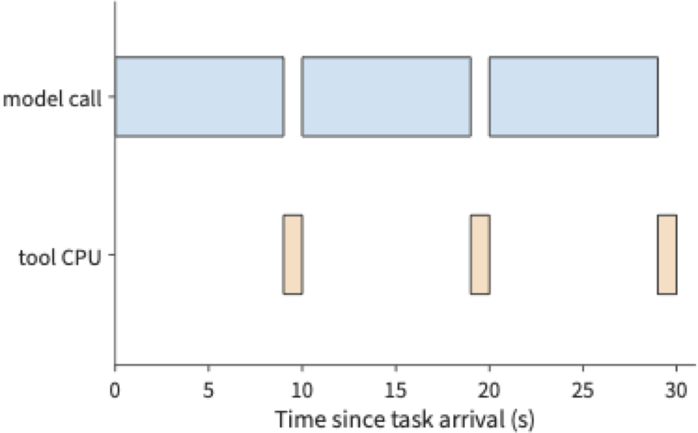
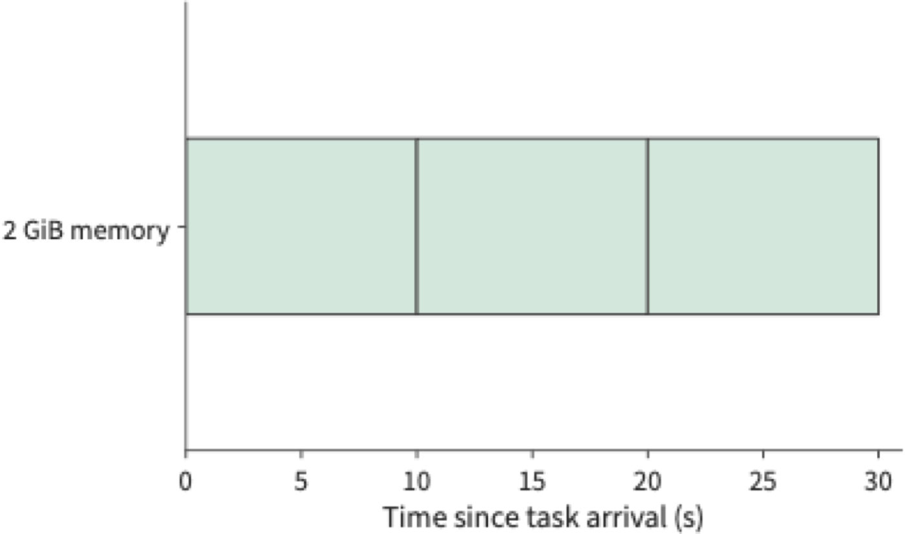
This waiting arises from the handoff between controller and executor. When a model call finishes, the controller obtains the complete tool arguments, then sends the arguments to the executor. The executor modifies files, starts tests, saves results, and hands the results back to the controller. The tool must wait for the model to produce complete arguments before it can execute, so it does not occupy the CPU for most of the task's duration.
When the model uses streaming output, it can return partial text earlier, but the tool still has to wait for the complete call arguments: only after receiving the target file, the modification content, and the operation type can the executor perform the modification. Template download and runtime initialization depend only on the predetermined environment type, so they can be moved earlier, during model generation. Section 11.2 makes use of this time to prepare the environment.3
Generalizing this example to \(R\) rounds, when the stages execute sequentially the total task time is
The equation above accounts, in order, for queueing, environment preparation, each round's model call and tool execution, and the time needed to submit the final result. Model call time includes processing the request and returning the result, tool execution time includes saving that round's result, and \(T_{\mathrm{commit}}\) denotes the remaining time needed for final submission. If the environment is prepared during the model call, once both finish the tool can begin executing immediately. What were originally two sequential stages now overlap, and both the total task time and the environment occupancy time change accordingly.
11.1.2 CPU Workload, Environment Residency, and Concurrent Capacity¶
To aggregate the requirements of a single task onto the whole platform, we first compute the task count, the model call count, and the environment creation count separately. The platform receives 10 tasks per second, and each requires three model calls, so at steady state the model service receives 30 calls per second; the tool also executes 30 times per second. If each task creates only one environment, the creation rate is 10 per second; if the environment is rebuilt every round, it is 30 per second. Although the task volume is the same, rebuilding the environment every round triples the creation count.
These requirements all come from the same relationship:
Each task uses 3 seconds of CPU time cumulatively, so the tasks arriving each second together need 30 seconds of CPU time, meaning an average of 30 CPU cores are executing tools; each task's cumulative memory occupancy is 60 GiB-seconds, so the platform's environments need an average of 600 GiB of memory; each task has three model calls of 9 seconds each, so on average \(10\times3\times9=270\) model calls are in progress.
Example 11-1: Why is the code-repair platform first limited by environment memory capacity? Dividing the requirements by the capacities given at the start of the chapter, CPU occupancy is \(30/48=62.5\%\), the model call concurrent capacity usage is \(270/320\approx84\%\), while memory demand reaches \(600/358\approx168\%\). 358 GiB of memory can hold at most 178 concurrent 2 GiB environments; since each environment must be retained for 30 seconds, the platform can start at most about 5.9 tasks per second, and the rest must queue. At this point 18 CPU cores are still idle, so adding more CPU cores cannot solve the environment memory shortage.
We can also derive the number of environments directly. Each task occupies an environment for 30 seconds, and 10 tasks per second begin using environments, so at steady state an average of 300 environments are in use. This is Little's Law in the form relevant to this problem:
Each environment occupies a fixed 2 GiB of memory, so 300 environments need 600 GiB. When a task's memory occupancy varies across stages, substituting each task's occupancy area \(A_M=\int M(t)dt\) into \(\lambda_{\mathrm{task}}E[A_M]\) still yields the average memory requirement. Likewise, CPU time \(W_{\mathrm{cpu}}=\int n_{\mathrm{busy}}(t)dt\) sums the actual execution time across all cores.
Extending each model call from 9 seconds to 12 seconds, with tool execution unchanged, the task time becomes 39 seconds, the average memory requirement rises to 780 GiB, concurrent model calls rise to 360, while the tool still needs on average only 30 CPU cores. The memory gap widens further, and concurrent model calls also exceed the 320 concurrent slots, so more tasks queue. This shows that slower model responses also increase the tool platform's memory requirement, because environments need to be retained longer.
Figures 11-3 and 11-4 convert the three resources into percentages of their respective capacities. At 9 seconds per call, the memory bar already exceeds the capacity line; once the call slows down, the CPU bar length stays the same, the model concurrency bar also exceeds the capacity line, and the memory bar grows longer still. The problem thus shifts from "how much idle CPU is there" to "can we reduce the memory occupied while waiting."
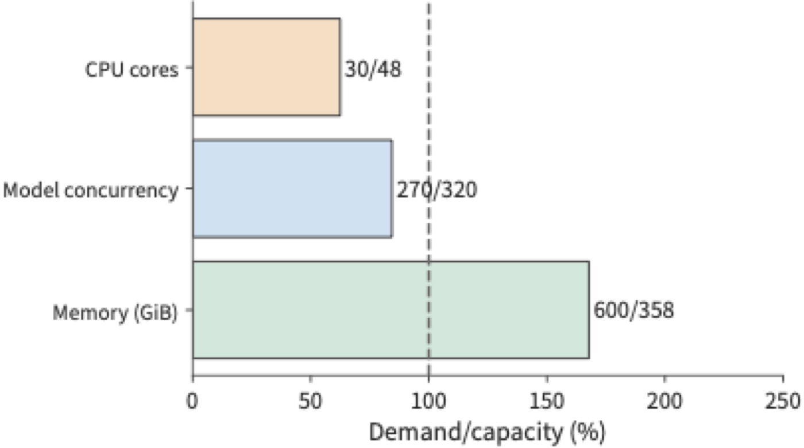
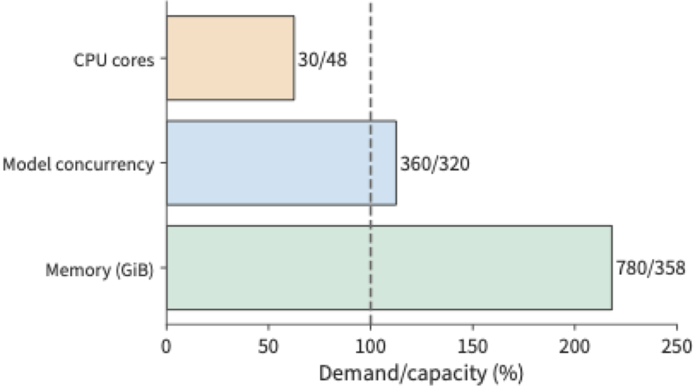
Production-scale agent training platforms show the same pattern. DeepSeek's DSec platform provides sandboxes for RL rollouts and evaluation. Over one week of its records, about nine in ten containers and microVMs used on average no more than 5% of the CPU they requested, while the files the agent modified, the dependencies it installed, and the services it started stayed in place the whole time the model was generating. The median sandbox lived about a quarter of an hour; the longest lived more than three hours. With CPU mostly idle, the platform practices overcommit: the CPU requested by all sandboxes together far exceeds the number of physical cores. A single DSec node has run 3,200 containers or 800 microVMs stably. Pushing density further runs into two limits: the memory held during waits, and tasks slowing each other down when they share a physical core.23
Besides shortening environment retention time, we can also stagger tool execution to reduce the number of processes occupying memory simultaneously. In a set of experiments with four CPU-bound tool processes, the cumulative CPU time for simultaneous startup versus staggered startup was about 0.29 seconds and 0.27 seconds respectively — comparable workloads. Resident set size (RSS) is the amount of physical memory currently occupied by a process's resident pages; the sampled peak RSS dropped from about 320 MiB to 80 MiB, while the time for the whole group to finish extended from about 0.10 seconds to 0.54 seconds. After staggering startup, fewer processes run simultaneously, so the memory peak drops, but the whole group of tasks also takes longer to complete.1
11.1.3 Task Completion Conditions and State That Must Be Retained¶
Reducing memory occupied during waiting means releasing part of the environment's state. Before releasing it, we must first identify which work would need to be redone if this state were lost. In the three-round task of Figure 11-1, by the end of the first two rounds, 20 seconds have elapsed, of which the tool's cumulative CPU time is only 2 seconds. If the working directory is lost and everything must be executed from scratch, that would cost 20 seconds again, not merely 2 seconds of tool computation. Which state can be retained determines which stages need to be redone after a failure.
| State | Information that must be recorded | Recovery method after loss |
|---|---|---|
| Model context and generation progress | Task, model version, input prefix, adopted output | Resubmit the context, rebuild model state |
| Working directory and files | Repository version, file digests, patch version | Retrieve from persistent copy or reapply the patch |
| Process and memory | Environment instance, process state, runtime conditions | Restore from snapshot or re-execute the tool |
| Tool results | Tool operation, execution attempt, input file version | Query the saved result or execute again |
| External operations | Operation identifier and submission status in the target system | Query, deduplicate, or compensate per business rules |
When recording this information, tasks, tool operations, and each execution attempt need their own identifiers. The same test result might be transmitted twice; the same test might also actually be executed twice. The former case only needs message deduplication, but the latter case has already consumed resources twice. If the file versions differ, two tests with the same name are not even the same tool operation.
After recording each attempt, we also need to distinguish why an attempt failed. The test result determines the controller's next step. If the program's output is incorrect, the controller needs to fix the program; if the tool process aborts due to insufficient resources, execution needs to be recovered. These two kinds of failure require different follow-up work, and their completion probabilities differ too. The same distinction appears in model training. RL updates the model based on a sample's verification result, and that verification must also distinguish these two cases: whether the answer is correct, used to compute the learning feedback; and execution failures, which are handled first by the execution system.
Failures and retries also carry additional cost. One submission can trigger multiple attempts. The platform pays model, tool, and environment cost for every attempt, but the user only gets the finally completed task. Section 11.5 accumulates spending along these branches, then divides by the number of tasks that passed the tests.
11.2 Creation, Retention, and Release of Execution Environments¶
11.2.1 Tool Execution Paths and Isolation Boundaries¶
Section 11.1.3 distinguished the files, processes, and operation results that need to be retained; this section explains how the environments hosting this state are created and released. Tool calls output by the model need to be executed by ordinary programs. The executor translates the calls into file operations, process launches, browser actions, or device tasks. The execution environment provides the operating system interface, filesystem, memory, network, and resource limits that code execution needs. The execution environment also needs to isolate different tasks to prevent them from interfering with one another.
Figure 11-5 divides the chapter-opening platform into two paths: the model service and the tool environment. The model service consists of 10 V4-Flash replicas, handling up to 320 concurrent calls; the environment platform allocates tool resources within one m5d.metal's 48 CPU cores and about 358 GiB of memory. The controller coordinates the two to complete the task: first obtaining arguments from the model, then having the tool execute and return results.
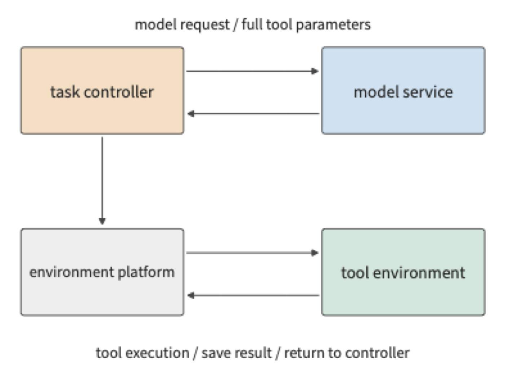
Isolating different tasks has multiple implementations, with increasing degrees of isolation. Processes typically share the same operating system kernel, relying on address spaces and permissions for basic isolation. Containers add namespaces (giving processes their own view of resources such as process IDs and networking), filesystem views, and resource controls, but usually still share the host kernel. A full virtual machine runs its own operating system kernel and is isolated from the host through virtual hardware; a microVM retains the virtual-machine isolation model while reducing overhead through streamlined virtual devices and management functionality. A sandbox is a description of execution constraints, not a specific implementation.
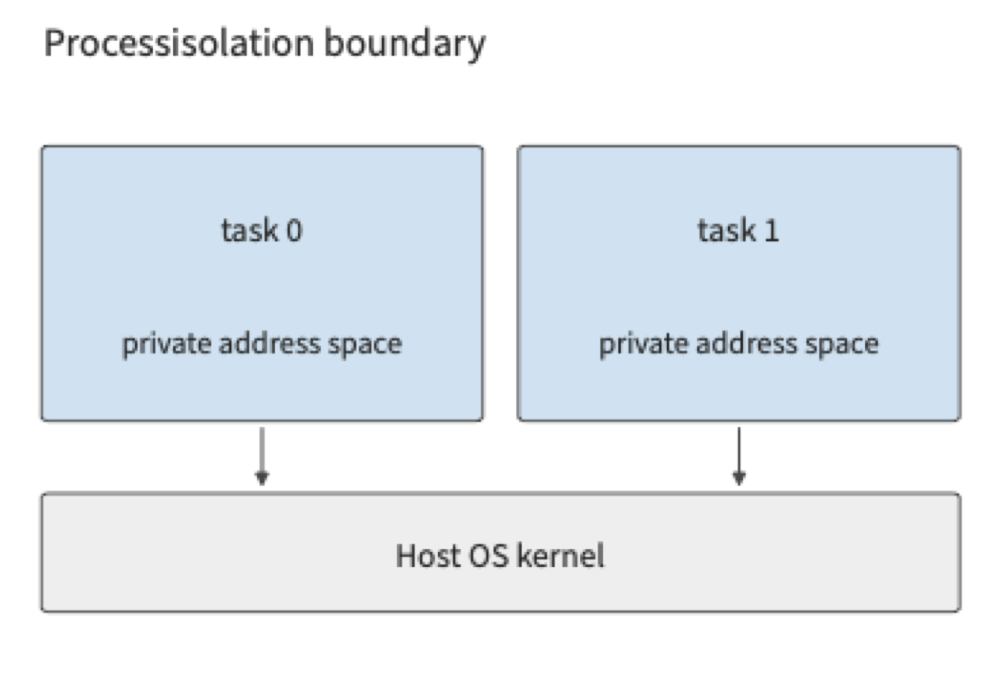
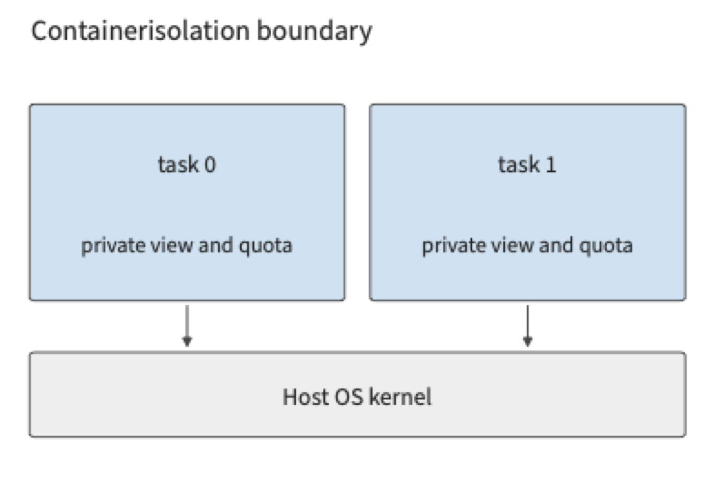
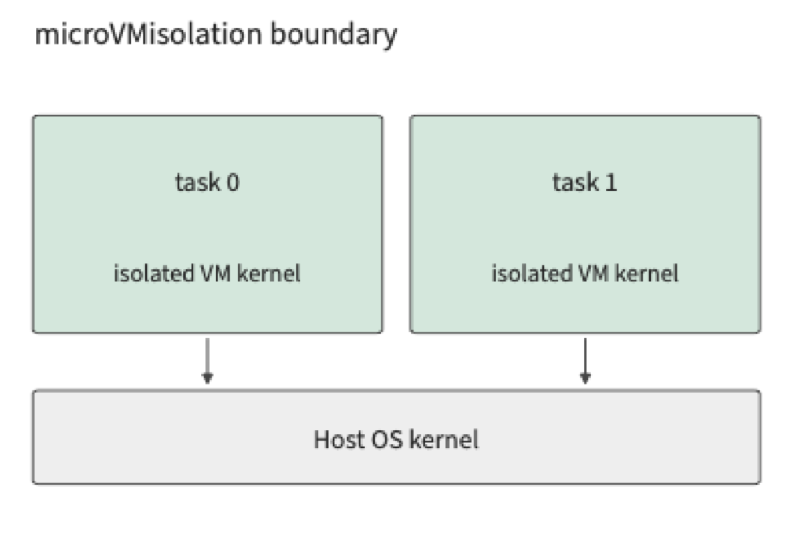
The chapter-opening platform's choice is exactly the microVM scheme. Firecracker was developed by Amazon Web Services (AWS) for serverless computing and open-sourced in 2018; the Firecracker team's 2020 NSDI paper discussed how to balance hardware-virtualization isolation, startup speed, and memory overhead across large numbers of short-lived tasks.22 E2B uses Firecracker microVMs to run tool environments, with templates buildable from container images. At creation time, the platform builds the environment from the template; at runtime, the tool reads and writes files and launches processes through the virtual machine kernel. The container image determines which files and dependencies are in the environment, while the microVM determines how these programs are isolated from the host system at runtime.4
The right isolation depends on the task: stronger isolation and a more complete system mean slower startup and more resources per environment. DSec therefore offers four kinds of backend and lets the caller choose per task. Short stateless work such as judging solutions or compiling code runs in pre-created, reusable containers, avoiding a creation step each time; repository-level tasks use containers, which start fast and pack densely; security tasks use microVMs; tasks that need a full commercial operating system (Android, for example) or graphics rendering use full virtual machines. The containers themselves run inside QEMU virtual machines: containers share the host kernel, so an outer VM adds a second boundary.
Isolation must also guard against the agent itself. Agents in RL training actively look for shortcuts. DSec recorded agents sending forged requests to the socket of the platform's proxy process inside the sandbox, searching the proxy's logs for leftover answers, and overwriting /bin/bash to tamper with later commands. There is accidental damage too: a recursive grep from the root directory read a file under /proc, hit a kernel bug, and crashed the whole machine; the output of a yes command, recorded verbatim by the platform, piled up to tens of GB. Shortcuts corrupt verification results; accidents spill over onto other tasks on the same node.
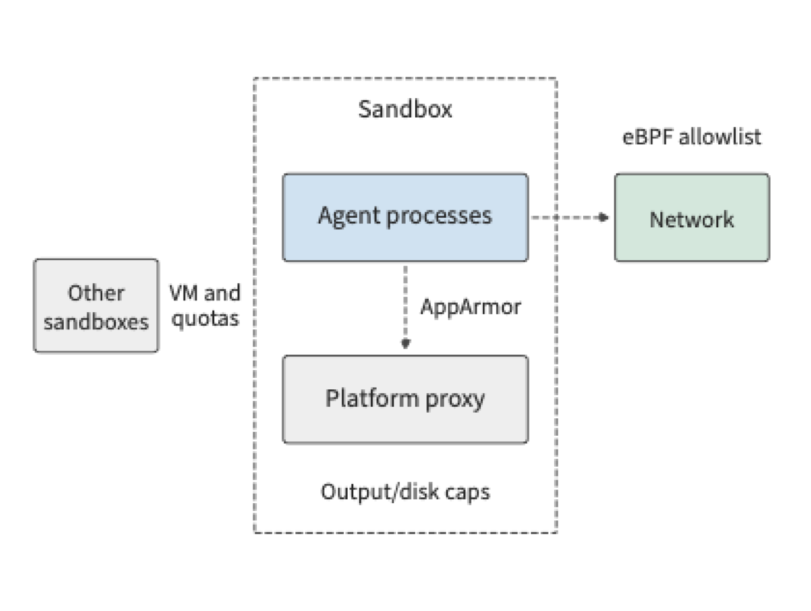
The defenses fall into three directions (Figure 11-9). Between sandboxes, virtualization and resource quotas keep them apart. Between the agent and the platform's own proxy process inside the sandbox, AppArmor (a Linux security module that restricts file and network access per program) lists which files and sockets may be read or written, and the agent cannot get around it even as root. Between the sandbox and the outside network, eBPF (a mechanism for running small verified programs inside the kernel) checks address, port, and protocol on every packet and passes only the package mirrors on the task's allowlist. These measures only block shortcuts that have already been found; the final output alone cannot tell whether the agent solved the task as intended.23
The two paths converge at the same task controller: the controller knows when the model call starts, when the tool uses the environment, and which files need to be saved across rounds. Based on this, the platform can separately schedule the retention and release of model state and tool state: the next round's environment can be prepared while the model is computing, and files can be saved and processes released once the tool finishes.
11.2.2 Resource Allocation and Environment Creation¶
Having settled on an isolation approach, the platform still needs to allocate resources for the environment and load the data the program needs. The tool platform allocates resources through CPU quotas, memory limits, and file and device access permissions. Increasing the CPU quota for an environment waiting on the model does not change its file and memory state; destroying that environment frees memory, but this content must be rebuilt before the next execution. Some tools also need a GPU — for example, when verifying CUDA programs, a GPU must be requested from the accelerator resource pool. Device passthrough lets a virtual machine directly operate the physical device assigned to it, and can be accomplished with the QEMU virtual machine program together with Linux's VFIO device-access interface.5
Creating an environment requires obtaining the template, establishing private state, and preparing the data needed for the first piece of work. The simplest approach is to copy the template in full; another approach is to share read-only content and copy only the pages that need to be written; data can also be loaded according to access demand. Loading less data when creating an environment shortens startup time, but the program still has to wait for loading the first time it accesses that data.
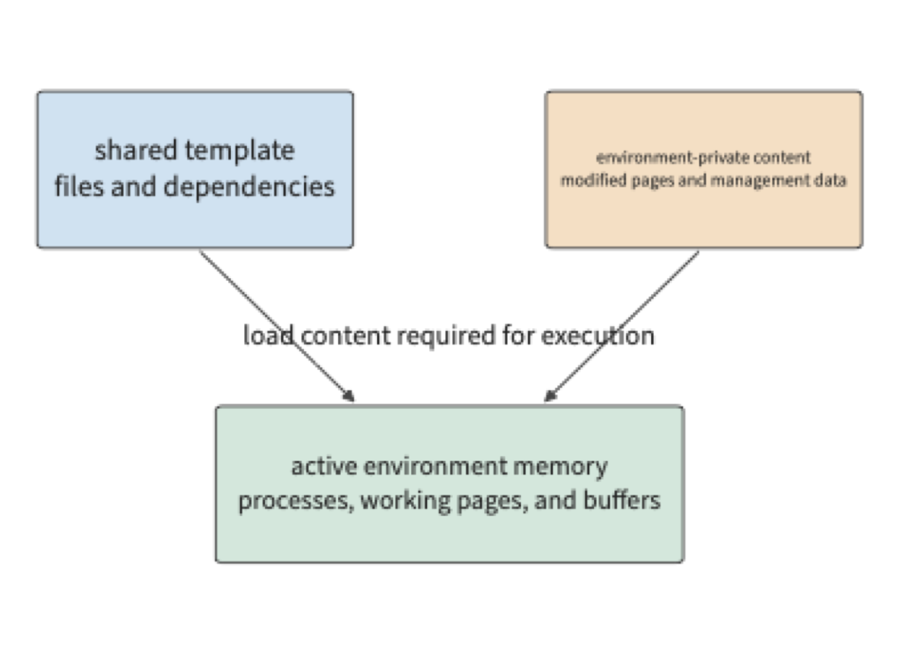
Example 11-2: How much environment memory can on-demand loading and read-only sharing save? To analyze creation overhead, first take 100 of the 300 environments from the start of the chapter and compare the memory needed to load template content into these 100 environments. Each template is 2 GiB, of which the tool accesses 512 MiB, modifies 128 MiB, with a further 4 MiB of private management overhead. Copying each one in full requires 2,052 MiB of local memory per environment, about 200 GiB for 100; loading only the accessed content requires 516 MiB per environment, about 50 GiB in total. The data that needs to be loaded into memory for the same set of tool tasks is thus reduced by about 150 GiB.2
We can also let environments share read-only content, retaining only 128 MiB of dirty pages (memory pages modified relative to the template) plus 4 MiB of management overhead. This gives 132 MiB per environment, about 13 GiB for 100. Read-only pages not yet loaded into local memory are fetched on access. If each environment additionally retains 256 MiB of hot read-only pages, the local total rises back to about 38 GiB, in exchange for fewer remote accesses.
The four loading approaches occupy about 200, 50, 13, and 38 GiB respectively, plus one shared 2 GiB template retained separately. The 2 GiB of memory allocated per active environment at the start of the chapter also includes the process and buffer space the tool needs at runtime. Sharing read-only content reduces duplicate storage, while keeping frequently used data local reduces remote reads. How much to retain depends on which pages the tool accesses first, and how soon it accesses them again.
Figure 11-11 breaks down the content each environment saves locally. Whether saving less data means the tool waits longer on its first read still needs to be computed.
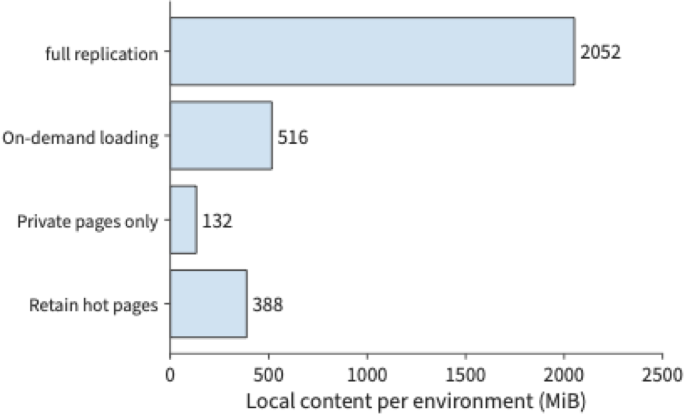
Suppose both fetching and loading are limited by the same 25 GbE link, at a rate of 3.125 GB/s (about 2.91 GiB/s). When the template is not yet cached locally, fetching 2 GiB and then loading 0.5 GiB of data into memory together take at least 0.86 seconds; when the template is already cached, only 0.5 GiB needs loading, dropping to 0.17 seconds. The roughly 0.69-second gap comes from the template transfer that is skipped. In general, the lower bound on the time this link needs to fetch and load data is \((V_{\mathrm{fetch}}+V_{\mathrm{install}})/B\), where \(V_{\mathrm{fetch}}\) and \(V_{\mathrm{install}}\) are the fetched and loaded data volumes respectively, and \(B\) is the link bandwidth.
If the tool's first execution also accesses 1 GiB of pages not yet loaded into memory, this link works for about another 0.34 seconds. On-demand loading lets the creation interface return earlier, leaving data not yet accessed to be fetched only when actually needed. E2B's page and file reads are organized exactly this way: the startup process first provides a runnable environment, and subsequent access progressively fills in the content. The completion time of the first tool execution includes environment startup plus the wait when first accessing missing pages. On-demand loading defers part of the preparation work to the tool execution period.4
In real workloads the fraction a tool reads is often lower. DSec sampled container images for five kinds of task — C++, Go, Java, JavaScript, and Python — each 4–12 GB, and found that only 4%–13% of the data was read at run time, below the 25% assumed in Example 11-2. A full copy then delays startup and spends most of its transfer and disk writes on data that is never read. Pulling images ahead of time does not remove that work: the same data is still transferred, decompressed, and written, only earlier. When thousands of containers start together, on-demand loading finishes the batch about as fast as when every image is already cached locally, while pulling full images first is about 1.7 times slower.23
Inside virtual machines, read-only content is duplicated once more. When a microVM reads its template through a virtual block device, the host's page cache (memory the kernel uses to cache file data) keeps one copy and every VM's own page cache keeps another. When many microVMs on a node read the same base image, memory ends up holding many identical copies (Figure 11-12).
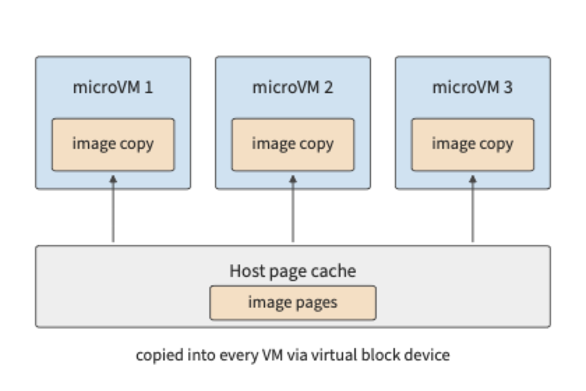
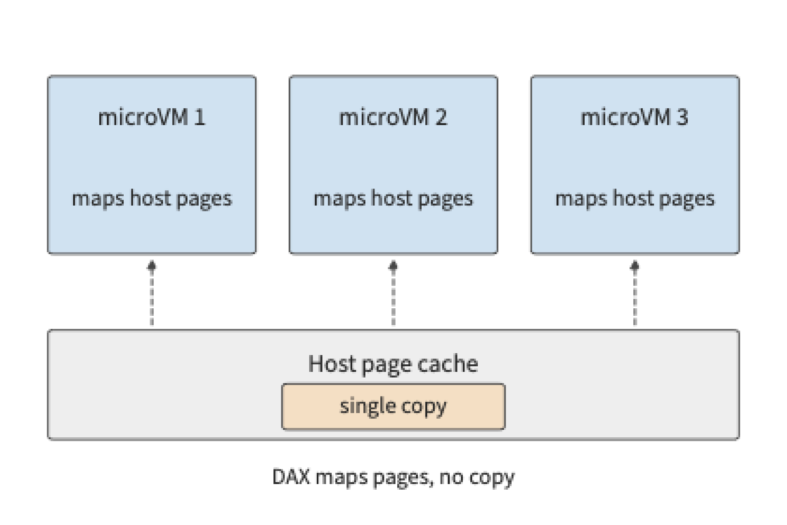
DSec serves read-only image layers through a virtio-pmem device with DAX (direct access) enabled: the VM maps file pages directly onto the host's cache pages instead of copying them into its own memory, so microVMs on the same node share one copy (Figure 11-13), and peak memory falls by about 40%. This has costs. The VM still allocates page descriptors for the whole address range, about 1/64 of the device's capacity; first accesses must handle page faults synchronously, and the VM's own readahead no longer helps, so peak CPU rises. Large writable disks stay on ordinary block devices, and their memory is reclaimed by the method below.
Memory freed inside a VM does not automatically return to the host. When a program in the VM exits, its pages go back to the VM's own free list, and the host still counts them as allocated. VMs also usually request more memory than they need, so there is no pressure inside to reclaim, and cold file pages read once stay cached indefinitely. DSec handles this in two steps: the VM periodically reports large free blocks to the host, which takes them back (free-page reporting in virtio-balloon); and DAMON (a Linux mechanism that samples memory accesses) finds file pages untouched for a long time and reclaims them, so scattered free pages merge into blocks large enough to report. Together they leave the peak almost unchanged but cut the cumulative memory footprint over a run by about a fifth.
The two mechanisms map onto the two quantities of Section 11.1.2. The peak decides whether a machine can hold this set of environments; the area \(\int M(t)dt\) decides how much memory is needed on average. Sharing read-only pages mainly lowers the peak; reclaiming cold pages mainly shrinks the area.23
11.2.3 Pause, Resume, and Environment Rebuilding¶
Section 11.2.2 reduced the data copied at each creation; another way to save memory is to temporarily release the whole environment between two tool executions. In the three-round task from the start of the chapter, the first round's tool finishes at second 10, but the second round's tool does not start until second 19, with a 9-second model call in between. Keeping it always resident occupies \(2\times9=18\) GiB-seconds. Per E2B's documentation, pausing a sandbox takes about 4 seconds per GiB of memory, resuming takes about 1 second, and the environment still occupies 2 GiB during saving and resuming. Pausing a 2 GiB environment takes 8 seconds: state is saved from second 10 to second 18, and resumed from second 18 to second 19. The next tool can still start at second 19, but the entire interval is filled with saving and resuming, and the occupancy is still 18 GiB-seconds — no saving at all.4
The occupied areas in Figures 11-14 and 11-15 are the same. To free memory during the wait, we must first save whatever state is still needed for the next round, and the save time grows with memory capacity; so how much pausing saves depends on what needs to be saved and how it is resumed.
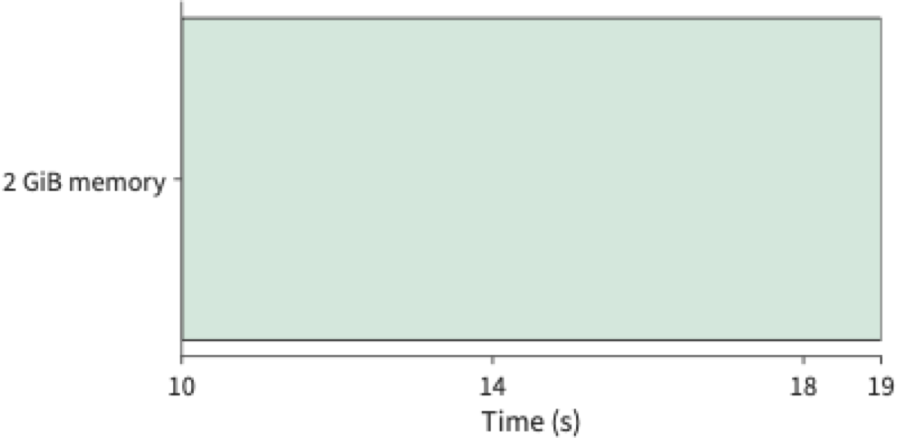
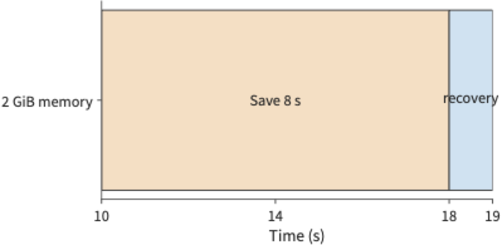
There is more than one way to resume saved state. Resuming after a pause continues the same task's execution; deriving from a snapshot creates multiple branches from the same state; recreating from an initial environment does not inherit any previous task's modifications. All three yield a runnable environment again, but they inherit different state.
An agent resuming from a running snapshot inherits previously modified files and processes. RL verification often requires each sample to start from the same initial directory, so it derives from a clean template instead. If a snapshot's files include the previous test's output, resuming also brings back that output. The initial template is used for repeated trials, while a running snapshot is used to continue progress — the two preserve state from different points in time.
Return to that 9-second model wait in the chapter-opening task. Pausing only starts to pay off when the environment is smaller or the interval is longer: for the same 9-second interval, a 512 MiB environment can be saved in about 2 seconds, freeing up 6 seconds; but if the interval is shorter than the sum of save and resume time, resuming would actually delay the next tool execution. E2B also offers a pause option that saves only the filesystem, restarting the system on resume; the per-round environment rebuild in Section 11.2.4 follows exactly this direction, keeping only the files and not the process memory.
Whether to pause can be decided by comparing costs. Let \(M\) be the memory freed in GiB, \(G\) the number of seconds it stays idle after being freed, \(p_M\) the price per GiB-second, and \(C_{\mathrm{transition}}\) the additional cost of state saving, storage, and resuming; pausing saves cost when \(p_MMG>C_{\mathrm{transition}}\). The left side grows with the idle time, while the right side is the cost that must be paid for each save-and-resume; setting the two equal gives the idle time beyond which pausing begins to save cost.
In the chapter-opening task the gap is only 9 seconds, so the left side is nearly zero; RL training has much longer gaps. In the MiMo RL runs of Section 10.4.4, each interruption lasted one to three hours before restart. When a GPU training job is preempted or interrupted, the sandboxes its rollouts use cannot be destroyed, since they hold the files and processes of unfinished trajectories; yet no tool call will arrive until training resumes. A single DSec job can request up to 32K sandboxes; at the chapter's 2 GiB each, that is about 70 TB, more than a quarter of the roughly 250 TB of memory in one DSec cluster unit. Saving and resuming a 2 GiB sandbox still takes only about 9 seconds, while the time freed is measured in hours: in a two-hour pause, memory is free for roughly 800 times as long as it stays occupied during saving and resuming.
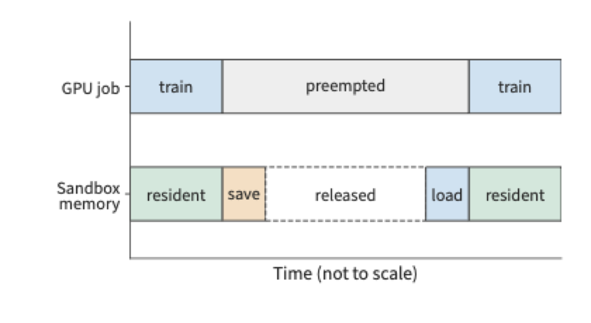
So on DSec, as soon as a job is preempted, the RL framework pauses all of that job's sandboxes (Figure 11-16). For a container, the platform first freezes the whole process tree, then lets its memory swap to disk and triggers reclaim; on resume it first issues prefetch hints on the processes' memory mappings, then unfreezes them. For a microVM, it writes memory and execution state to a snapshot and then ends the VM process; on resume a new process loads the snapshot. Both approaches move state from memory to the next level of storage and bring it back when needed, so their cost grows with the size of the state. Any request sent to a paused sandbox resumes it first, so the controller need not track which sandboxes are paused.23
Cost comparison decides whether to pause; once paused, different states must be resumed in different ways. A snapshot saves files and memory, connections are re-established by the client, and external storage continues to retain writes that have already been committed. After resuming, the controller first retrieves the operation result, then continues to the next round, avoiding redoing modifications that have already been completed.4
11.2.4 Always-resident, on-demand creation, and advance preparation¶
A pause requires saving process state. If the next round only needs the already-saved files and results, the process snapshot can be dropped altogether and the environment rebuilt directly. For the chapter's opening code task, the working directory and results have already been persisted, so every round of tool use can start a new process. E2B's templates are themselves virtual machine snapshots that have already been booted once; the documentation states that restoring a sandbox takes about 1 second. When the template is already cached on the local machine, booting a microVM from the template, then loading the working directory and initializing the tool runtime, takes a total preparation time of 2 seconds — call this the warm path. When the template is not local, a 2 GiB template must first be fetched over 25 GbE, adding about 0.69 seconds, making the cold path about 2.7 seconds. The rest of this section assumes the warm path. Each preparation consumes 0.1 seconds of CPU time cumulatively, and occupies 2 GiB from the start of preparation until the tool finishes. Preparation only loads the known tool runtime and working directory; file modifications execute after the complete tool-call parameters are received.
Since the first model call is known to return at second 9, the platform can begin preparing the environment at second 7, execute the tool at second 9, then save the result and destroy the environment at second 10. The next two rounds begin preparation at second 17 and second 27 respectively. All three preparations complete during the model call, the task still finishes at second 30, and each round only needs to retain the environment for the 3 seconds of preparation and execution.
The cumulative memory footprint per task drops from 60 to \(3\times(2+1)\times2=18\) GiB·seconds, and the platform's average memory footprint drops from 600 to 180 GiB. The cost is creating 30 environments per second; preparation work adds an average of \(30\times0.1=3\) CPU cores, raising CPU demand from 30 to 33 cores. The Firecracker paper reports that a single host can create up to 150 microVMs per second, so 30 per second is well within that range. By adding a small amount of environment-creation work, the platform saves the 420 GiB of state that would otherwise have been retained during waiting, dropping the memory requirement from 600 GiB — which this host cannot hold — to about half that capacity.
Figure 11-17 and Figure 11-18 compare the complete task timeline under the two environment-management approaches, showing how memory usage changes. The three moments of tool execution are unchanged; what disappears is the memory footprint during the long stretch of model waiting. Preparation timing can be scheduled precisely here because which tool the next round will use, and when the model will return, are both known in advance.
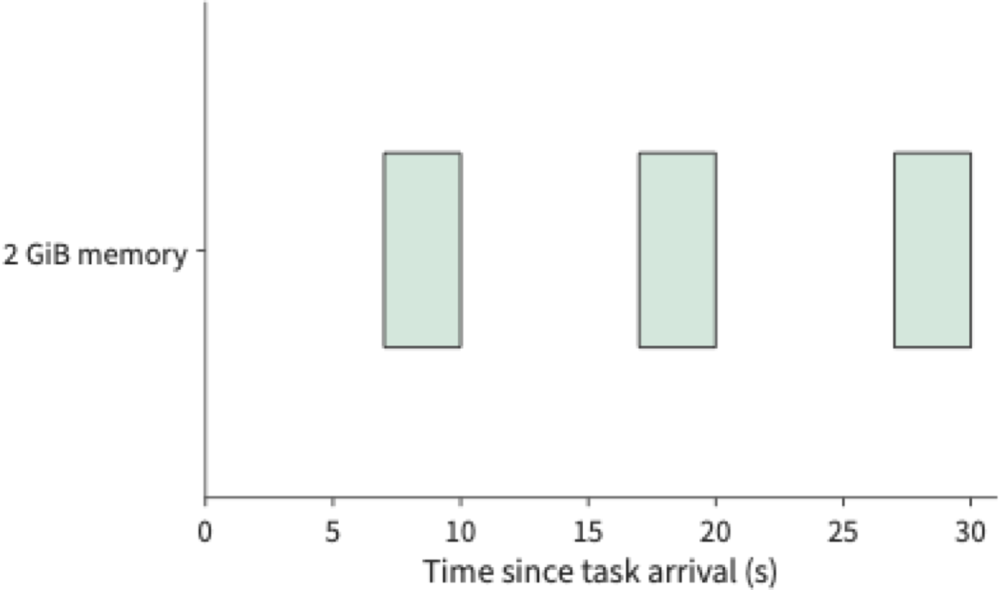
This arrangement presupposes that preparation can finish before tool execution begins. If the type of the next tool must be predicted from the streamed output, then how long the caller waits after issuing the call depends on how far in advance preparation started and on whether the prediction was correct. SpecBox uses the tool type revealed in streamed output, together with a record of tool switches, to prepare the corresponding environment in advance; the analysis below examines the benefit for a single call.3
Let a single preparation take \(P\) seconds, the lead time be \(L\) seconds, and the probability of correctly predicting the required environment be \(h\). Assuming correct predictions do not contend for resources, and incorrect predictions can be canceled immediately, with the correct environment then prepared on demand, the average time spent waiting for the environment to become ready after the call is issued is
When the prediction is correct, the first \(\min(P,L)\) seconds of preparation overlap with the model call, and the tool call still waits for the remaining preparation work to finish; when the prediction is wrong, the actually needed environment is prepared from scratch. Weighting the two paths by the hit probability yields the expression above. Once preparation can already finish before the model returns, starting preparation even earlier only lengthens the time the ready environment sits idle waiting for the call.
Take \(P=2\) seconds and \(h=0.75\). Without advance preparation, every call waits 2 seconds. With 1 second of lead time, three out of four calls on average wait only 1 second, while one — due to a wrong prediction — still waits 2 seconds, giving an average wait of 1.25 seconds. With 2 seconds of lead time, the correct branch no longer waits at all, and the average drops to 0.5 seconds. With 3 seconds of lead time the average is still 0.5 seconds, but the correct branch now sits ready 1 second longer. For a 2 GiB environment, each prediction therefore adds an average of \(0.75\times2\times1=1.5\) GiB·seconds of idle memory footprint.
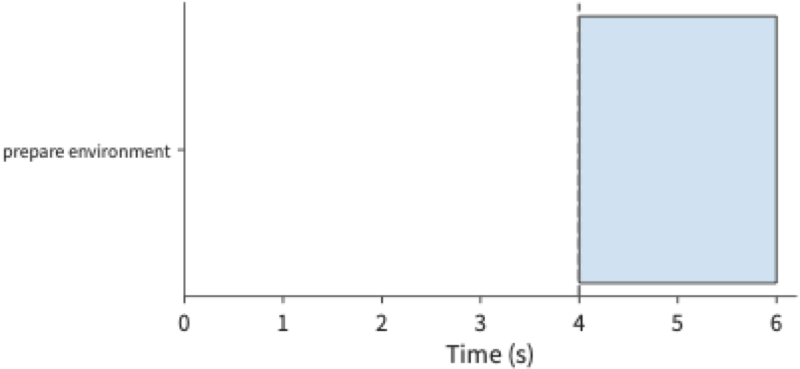
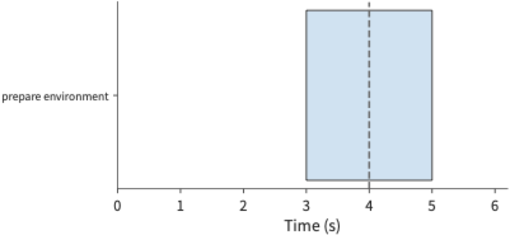
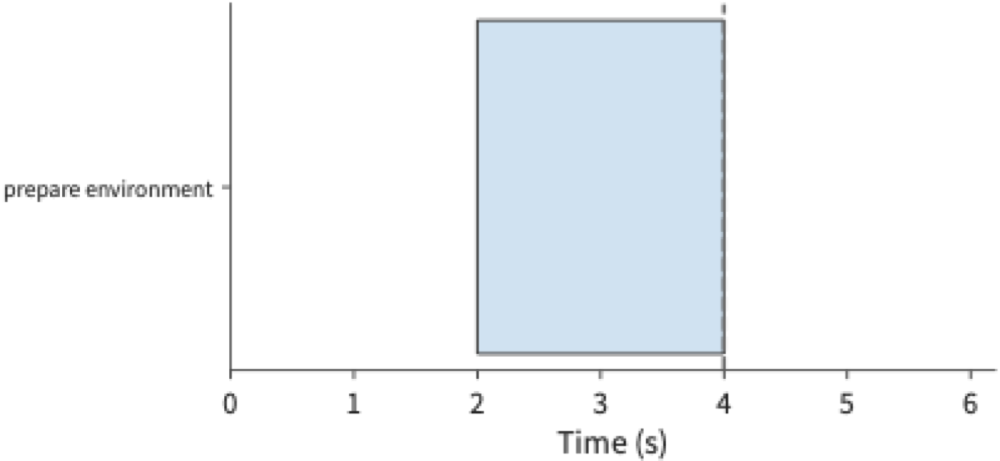
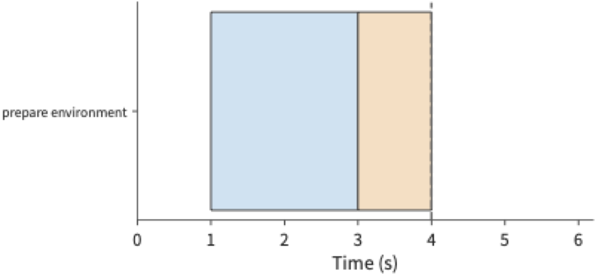
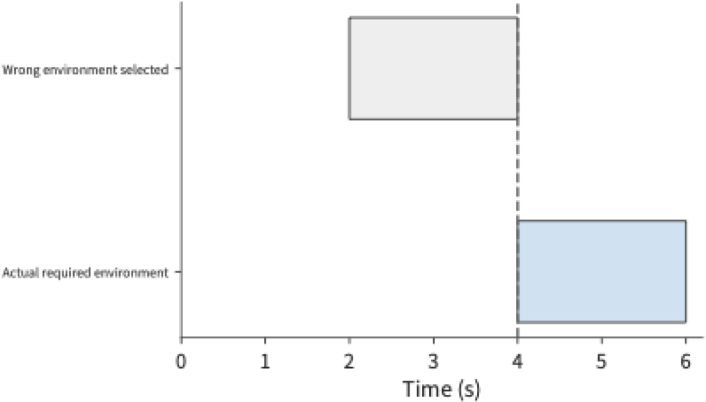
This gives three ways to compare reducing wait time. Caching the template can eliminate the overhead of repeatedly fetching data; keeping an already-started environment resident allows immediate execution once the call arrives, but requires continuously occupying memory; rebuilding the environment each round can instead make use of the model call's duration to complete preparation. In the chapter's opening task, the runtime needed for the next round is already known, so the environment for the next round is prepared during the model call; when multiple tools appear in alternation, the prediction hit rate must also be factored into the calculation.
A replay of local tool calls illustrates the cost of preparing too early: switching from preparation with a 50 ms lead time to preparation starting at the very beginning of the model wait leaves the cumulative tool-call time roughly unchanged at about 0.26–0.28 seconds, yet the cumulative memory footprint computed from the sampled results rises from about 0.0193 to 0.467 GiB·seconds — about 24 times higher. Most of this added memory footprint occurs during the interval in which the environment is already ready but the call has not yet arrived. As long as the environment can be readied before the tool call arrives, there is no benefit to creating it any earlier.6
Rebuilding every round works only because of the chapter's premise that all state needed for the next round has already been written to durable storage. Many agent tasks do not meet it. The model installs dependencies and starts databases or background services, and later calls rely on those processes and their memory; saving only the files rebuilds an environment that is not the same as the original. DSec keeps each sandbox alive for the whole interaction and takes the other route: keep the environment, but push down its residency cost, using the on-demand loading, read-only page sharing, and cold-page reclaim of Section 11.2.2 and the pauses during long gaps of Section 11.2.3. Which route to take depends on whether the state between rounds can be written out completely: if it can, a little creation work buys back a lot of memory; if not, the environment must stay and residency is squeezed instead.23
11.3 Allocation and scheduling in a shared resource pool¶
11.3.1 Heterogeneous resources, grouped allocation, and placement constraints¶
After computing a single task's resource requirements, one must still determine whether the shared resource pool can supply these resources simultaneously. A multi-card job typically requires a specific card type, per-card memory, matching CPU and host memory, and a location suited to its communication pattern. That the total number of idle GPUs meets the requirement is only one necessary condition for the job to be able to start.
These resources must also fall on suitable nodes: whereas the chapter's opening CPU tool independently uses one core at a time, multi-card training requires a group of accelerators to advance together, so that all the processes in the job can start at once. Whether a multi-card job can start therefore also depends on which nodes the idle resources are distributed across.
Example 11-3: How do GPU, CPU, and node constraints create resource fragmentation? A job requires four H100s and 16 CPU cores, and requires these resources to be on the same node. Node 1 is a DGX H100 (8 H100 SXM cards, dual Xeon Platinum 8480C for 112 cores total), already running a job that occupies four H100s and 104 cores, leaving four H100s and 8 idle cores; Node 2 is a DGX A100 (8 A100 cards, dual EPYC 7742 for 128 cores total), with four idle A100s and 32 idle cores. The pool as a whole has four idle H100s and enough CPU cores, but no single node satisfies all the conditions.21
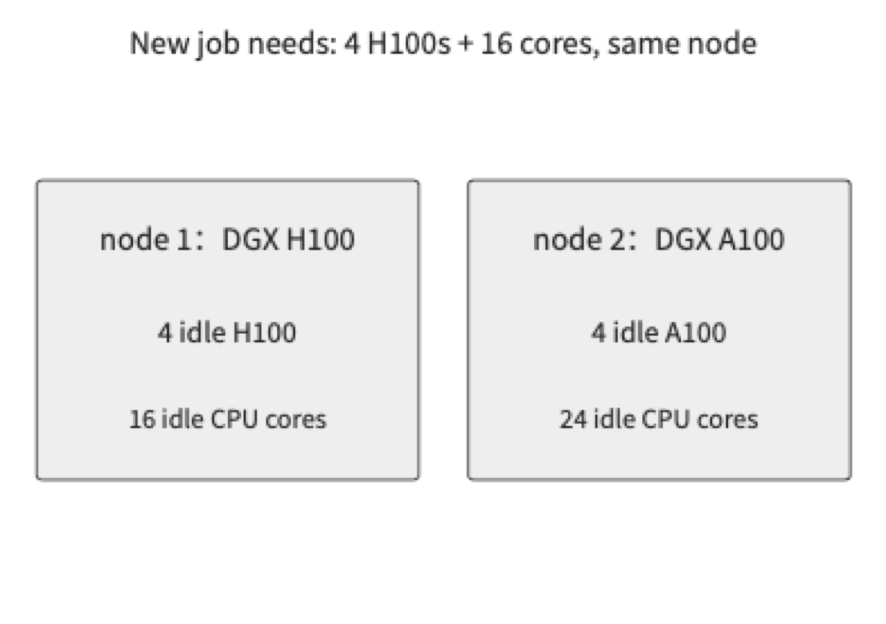
Suppose waiting for Node 1's original task to finish would take 12 seconds, migrating that task takes 4 seconds, and the new job's local execution takes 20 seconds. Waiting then executing takes 32 seconds total; migrating then executing takes 24 seconds total — by rearranging resources, the new job finishes 8 seconds earlier. If an alternative compatible cross-node configuration instead requires 1 second of preparation and 32 seconds of execution, then starting it immediately in a distributed fashion takes 33 seconds total — actually later. The completion times of the three schemes are, respectively,
In this example, the migration scheme finishes 8 seconds earlier than waiting and 9 seconds earlier than distributed startup. As the state to be migrated grows, migration time also grows; once it reaches 12 seconds, the migration scheme and the waiting scheme both take 32 seconds. The scheduler can therefore compare the predicted migration time directly against the original task's remaining time, and choose whichever scheme assembles all the required resources sooner.
Resource fragmentation likewise occurs in production clusters. A 2026 study by researchers at the Hong Kong University of Science and Technology, Alibaba, and other institutions analyzed production GPU clusters on Alibaba's Serverless Infrastructure (ASI). The study shows that insufficient matching CPU, jobs requiring grouped startup, and network location constraints can all leave idle GPUs unusable. After adding preemptible low-priority jobs, GPU allocation ratio in the study rose from 68% to 93%. These low-priority jobs use accelerators that high-priority jobs are not immediately using; when a job requiring grouped startup arrives, the scheduler reclaims these accelerators and assembles the needed resources by migrating tasks.3
11.3.2 Queues, priority, and preemption cost¶
Even when node configuration is suitable, simultaneous request arrivals can still outpace resource turnover. In the chapter's opening task, requests arrive uniformly, requiring 30 tool calls per second, which 48 CPU cores can handle comfortably. When calls arrive in a burst, queueing time can differ even though total work is unchanged.
Consider first a single execution process, where each unit of tool work takes 1 second. If ten units of work arrive at seconds 0, 1, ..., 9 respectively, each can execute as soon as it arrives, and the queueing time is zero throughout. If all ten arrive at second 0, execution still takes 10 seconds, but the queueing times of the individual items are 0, 1, ..., 9 seconds respectively, averaging 4.5 seconds. Total workload determines how long the execution process must work; arrival timing and execution order determine how long each task waits beforehand.
Figure 11-26 and Figure 11-27 compare these two arrival patterns, with the latter using gray bars in front of the execution blocks to represent waiting time. The same 10 seconds of execution work can produce either no queueing or substantial waiting. Extrapolating from average resource requirements to actual response time therefore also requires knowing whether requests arrive concentrated in time.
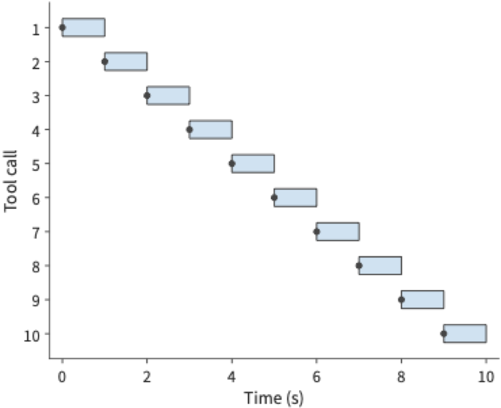
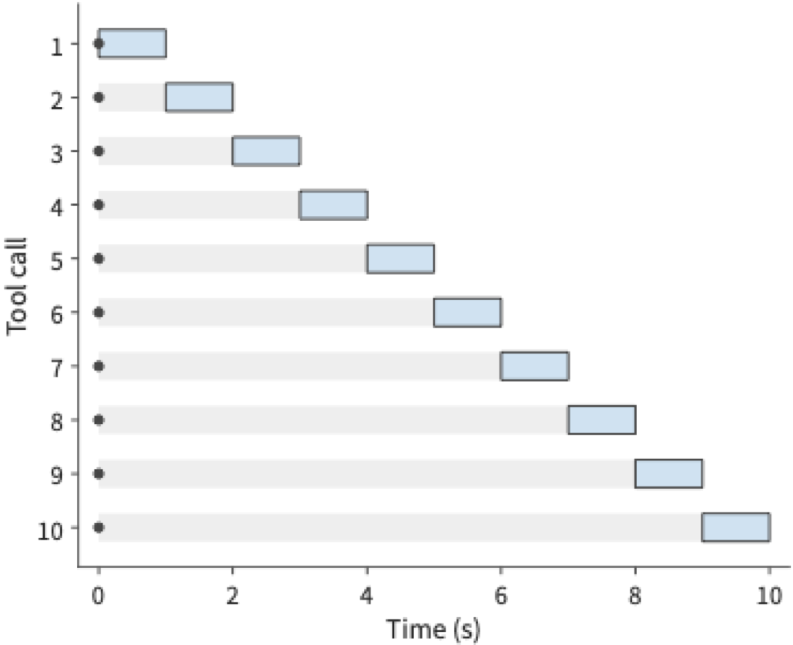
Take the code-repair platform's burst of tool calls as an example. Suppose all 48 of the platform's cores are idle when 80 tool calls, each requiring 1 second, arrive simultaneously; the first 48 execute immediately, and the remaining 32 wait 1 second; the average wait is 0.4 seconds, and all finish within 2 seconds. Scaling up to two m5d.metal instances (96 cores), this burst finishes within 1 second. Adding CPU cores raises the capacity for handling bursty requests; when tasks arrive uniformly, only 30 CPU cores are still needed to execute the tools.
The same batch of tool calls also needs enough environment memory. Each environment takes 2 GiB, so 80 prepared environments need 160 GiB. The always-resident scheme needs about 600 GiB, which by itself exceeds the 358 GiB of memory available; the per-round rebuild scheme from section 11.2 occupies only 180 GiB on average, leaving about 178 GiB — enough to accommodate these 80 environments. Reducing the environments retained during waiting frees memory for new calls, letting idle CPU begin executing promptly.
When a burst is spread over many nodes, each environment still needs a home. DSec's peak creation rate exceeds 5,000 sandboxes per second; spread over 160 nodes that is about 31 per node per second, close to the 30 environments per second assumed in Section 11.2.4. The node loads the scheduler sees are summarized periodically, so requests placed since the last summary are missing; if every decision picked the currently least-loaded node, a batch of simultaneous requests would all land on the same node.
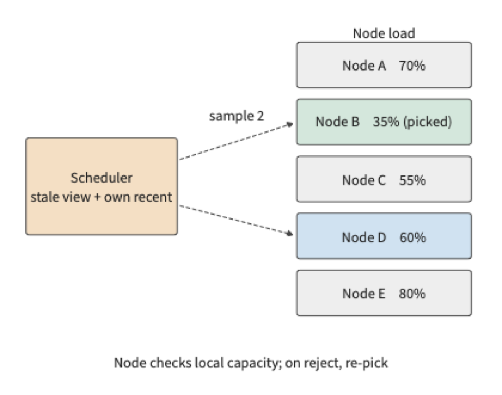
DSec addresses this with three measures (Figure 11-28). First, each decision samples only a few nodes at random and picks the least loaded among them — power-of-k-choices — so simultaneous decisions naturally spread out. Second, each scheduler instance adds the sandboxes it has just placed, not yet in the summary, to its local view. Third, the node has the final say: if local resources are tight it rejects the request and the scheduler tries another node. The global view is allowed to be stale, because the node's own check keeps it within capacity; neither the scheduler nor the load summary keeps durable state, so instances can be added or replaced at any time.23
After reserving capacity for burst requests, one must also decide the ordering among requests. Priority determines who uses this margin first. Online tasks require a quick start, while offline tasks can wait, so the platform can let offline work temporarily borrow resources and reclaim them when an online call arrives. Suppose an online task must wait at most 2 seconds, while an offline job needs 30 seconds to save its state. This group of resources, even if preemptible, cannot be handed back until 30 seconds have passed; the platform therefore needs to separately reserve resources that can be allocated to online tasks within 2 seconds.
Setting priorities does not necessarily separate tasks in hardware. Overcommit makes latency-sensitive (LS) tasks share CPUs with best-effort (BE) tasks that can wait — for example, a chess-playing agent with a time limit per move alongside ordinary code tasks on the same node. Putting BE tasks in Linux's SCHED_IDLE scheduling class makes them yield whenever an LS task is runnable. But with simultaneous multithreading (SMT, or hyper-threading) enabled, one physical core has two hardware threads that share execution units and the L1 cache. The scheduler allocates hardware threads, so an LS task and a BE task can still run at the same time on the two threads of one physical core (Figure 11-29).
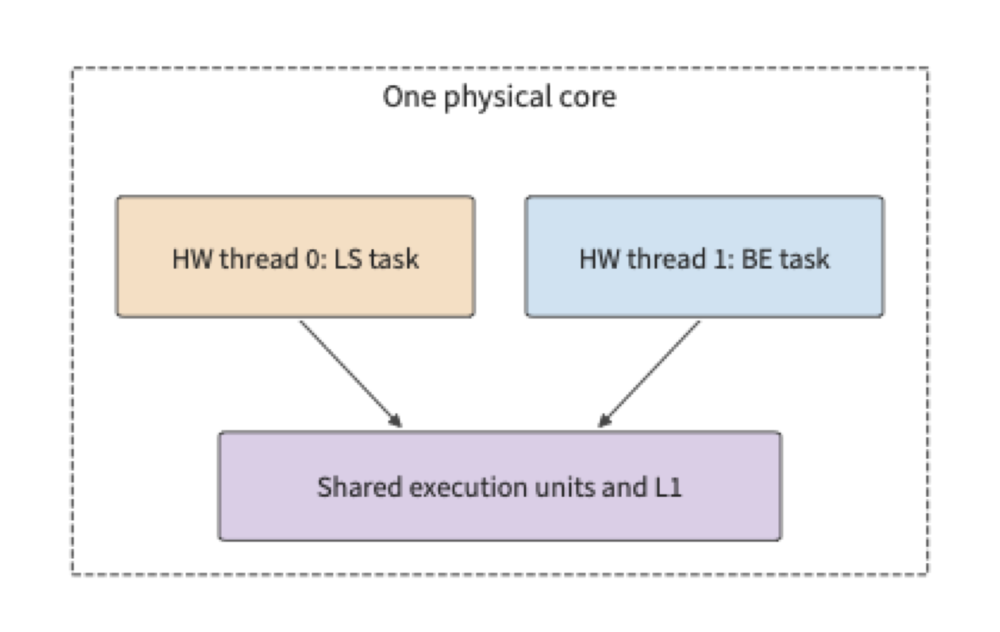
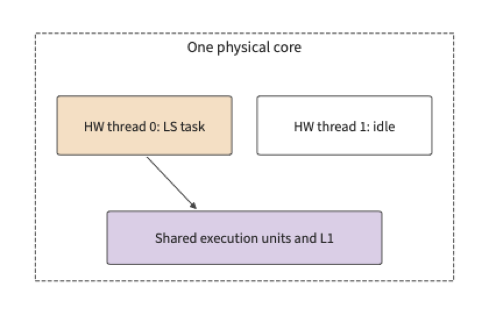
In DSec's measurements, with BE load at half the node's capacity, each LS step took about 45% longer, and SCHED_IDLE alone barely helped. Enabling Linux core scheduling for LS tasks, which keeps unrelated tasks off the same physical core (Figure 11-30), cut the increase to about 17%. The rest comes from frequency throttling under heavy load and from shared memory bandwidth and last-level cache, which need other mechanisms to isolate. The chapter's m5d.metal has hyper-threading disabled, one hardware thread per core, so this interference does not arise — at the price of half as many schedulable logical CPUs.23
A single preemption also loses unsaved progress. For a job that has run for 20 seconds with a 2-second recovery time, how much difference there is between resuming from the most recent checkpoint and redoing the work from scratch depends on the work accumulated since that checkpoint. A scheduler must weigh both how much earlier the new task can start and the overhead of saving and restoring state, along with the resulting extra delay to the original job.
Preemption illustrates the cost of advancing one task ahead of another. Over the long run, one must also avoid perpetually deferring the same batch of tasks, and so must decide by what standard allocation fairness is measured. Two tasks each receiving two GPUs may look like an equal share; if one type of card takes twice as long as another to perform the same work, their actual progress differs. Dominant resource fairness (DRF) designates, for each task, whichever resource type it consumes the largest share of as its dominant resource, and allocates resources fairly according to dominant-resource shares; studies such as Gavel and Pollux go further, accounting for differences in accelerators' processing capability or training progress. Allocating by resource share focuses on how much resource each task receives; allocating by progress focuses on how fast each task advances; capping the maximum wait time instead prevents certain tasks from being perpetually starved of execution.7
Scaling up from a single tool call to RL training, resource requirements also change across stages. The interaction trajectories generated by rollout include both model output and feedback from tools or the environment. The next section computes how much training time is actually saved by adding accelerators for generating such trajectories.
11.3.3 Dynamic resource ratios between RL generation and training¶
A single synchronous RL iteration requires generating samples, completing verification, and performing the update. If the effective generation volume required per round is \(Q\) and the generation pool's rate is \(r_g\), the simplified generation-stage time is \(Q/r_g\). Adding rollout accelerators can only shorten the parallelizable generation portion; each round still needs to complete verification, the update, weight publication, and any necessary synchronization. If these stages execute sequentially, then
For example, if generation, verification, updating, and publishing take 40, 10, 30, and 5 seconds respectively, a round takes 85 seconds in total. Doubling only the generation rate brings a round down to 65 seconds — an overall speedup of only about 1.3x; even if generation time drops to zero, the remaining stages still take 45 seconds, so the overall speedup cannot exceed about 1.9x. As generation time shrinks, verification and updating account for an ever-larger share of the total time, and the time saved by adding further generation accelerators keeps diminishing.
In Figure 11-31, adding generation accelerators shortens only the blue portion. There are two ways forward: change the execution order so that verification overlaps with generation; or keep adding generation accelerators, but first compute the preparation overhead incurred before the new accelerators join.
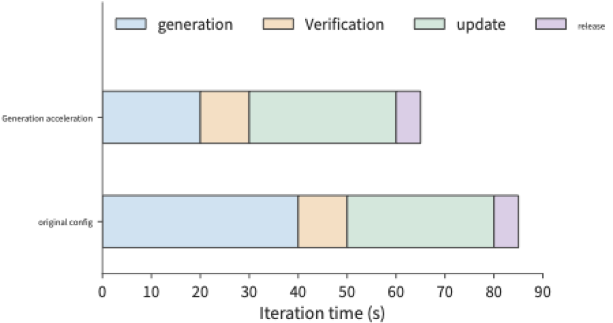
The approach of overlapping verification with generation is covered in section 11.3.4. When adding temporary generation accelerators, RLBoost keeps the training group unchanged and lets temporary instances join the generation pool once their weight preparation is complete.8
Example 11-4: How does a shared egress link limit the speed of distributing weights to multiple instances? Qwen3-8B's complete BF16 weights total 16,381,470,720 bytes, about 16.38 GB (decimal), to be sent separately to six rollout instances. Following RLBoost's experimental configuration, the eight-card H100 training instance sends over a 200 Gbit/s front-end NIC (connected to the general-purpose datacenter network, not the high-speed inter-GPU interconnect), while each two-card rollout instance's front-end interface is 50 Gbit/s, and the six transfers share the sender's egress link. Sending the complete weights to a single recipient takes at least
while the shared egress must send about 98.3 GB in total, so sending complete weights to all six instances takes at least
Getting the weights to all six instances takes at least 3.93 seconds; the first instance can receive its own 16.38 GB earlier. After that, the recipient loads the weights into GPU memory and confirms the version, and only then does the scheduler assign it requests. PolyRL, which uses temporary resources to expand the RL generation pool, first receives the complete weights into a CPU buffer and then hands them to a GPU group using TP (see section 6.2.2). Hence TP=2 only splits the computation within an instance across two cards; each instance still receives the full 16.38 GB of weights from outside.
Figure 11-32 marks the egress link shared by all six copies of the weights. As the number of receiving instances grows, the total bytes that must be sent grows too, but the sender's bandwidth does not grow along with it. After the weights finish transferring, they must still be loaded onto the GPU, and this preparation time must also be deducted from the time the temporary instance has available.
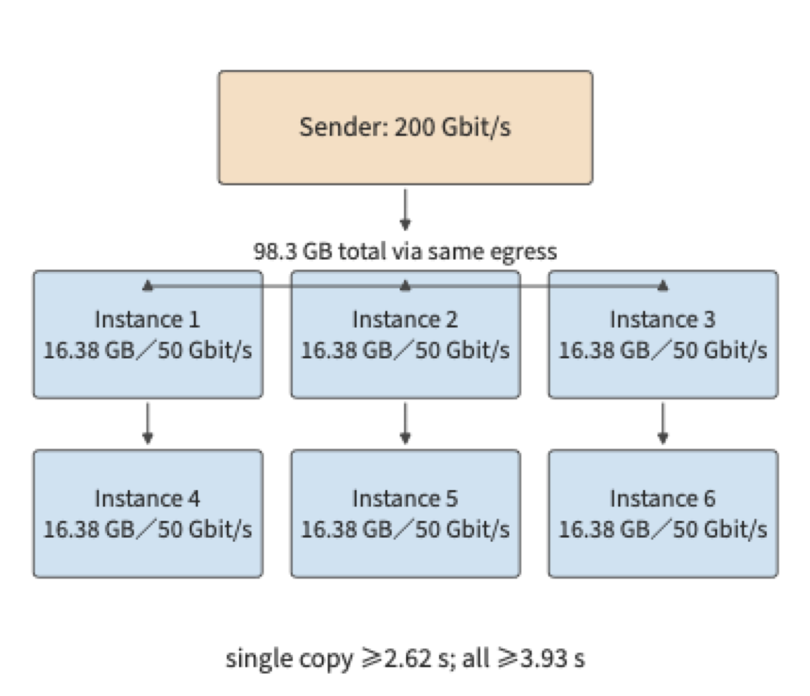
Once a temporary instance is allocated resources, it must complete preparation before the remaining time can be used for generation. Suppose an instance needs 8 seconds total from resource allocation to the start of generation, and has 20 seconds available in total, leaving only 12 seconds for generation; if only 5 seconds are available, the instance is reclaimed before it can even begin work. Let the available time be \(L\) and the preparation-and-recovery time be \(T_0\); the usable working window is then \(\max(L-T_0,0)\). The longer an instance remains available, the smaller the share consumed by preparation overhead, and the larger the share left for actual generation.
When a temporary instance is reclaimed early, what is lost is not only unused capacity but also content already generated. Saving the generated prefix can carry completed work over to a new instance: the new instance reads in the "original input plus recorded output," performs prefill, builds the KV cache, and then continues generation. When PolyRL recovers a group of requests sharing sampling parameters, it truncates every response in the group to the shortest already-saved length among them: if two responses have already received 4,000 and 1,000 tokens respectively, both are truncated to 1,000 tokens, reusing 2,000 tokens combined, while the 3,000 tokens beyond that in the longer response must be regenerated. Once truncated to the same length, this group of requests can be scheduled uniformly for subsequent generation.
In one controlled comparison on a local Qwen3-8B 4-bit deployment, keeping the prefix saved 96 tokens of duplicate sampling, yet the total request time was about 12.8 seconds, versus about 11.6 seconds when redone from scratch. The tokens saved correspond to the generation stage, while the complete path also includes prefix reconstruction and rescheduling. In this comparison, the extra time spent on prefix reconstruction and rescheduling exceeded the generation time saved.9
Whether adding temporary instances is worthwhile can also be judged from cost. Using the historical prices RLBoost employed, a training instance costs about 84 per hour, and each of six additional instances costs about 5.30, for a combined rate of about 116 per hour. When all instances are billed the whole time, throughput for the same batch of training tasks must reach about \(116/84\approx1.38\) times the original rate before the per-unit-work cost drops. If throughput reaches only 1.2 times the original, completion time shortens but cost rises to about 1.15 times the original; at 1.6 times the original throughput, cost instead drops to about 0.86 times.8
What has been saved so far is a trajectory's progress on the model side. An agent rollout also has state on the environment side: files changed and processes started in the sandbox, and the conversation and tool results recorded by the agent loop (the controller that calls the model, issues tool calls, and collects results). When a GPU job is preempted, these two parts fare differently. Early versions of DSec's pipeline ran the agent loop together with model serving and the RL framework in a preemptible GPU container (Figure 11-33). After preemption the sandbox survived, but the agent loop's state vanished with the container. On recovery, the training framework first restored the rollout progress it had recorded, then replayed a command log: tool calls already executed returned their recorded results instead of running again, so no command ran twice — appending to a file a second time, say, or resubmitting a request to an external system. This is the recovery method in the "tool results" row of the state table in Section 11.1.3.
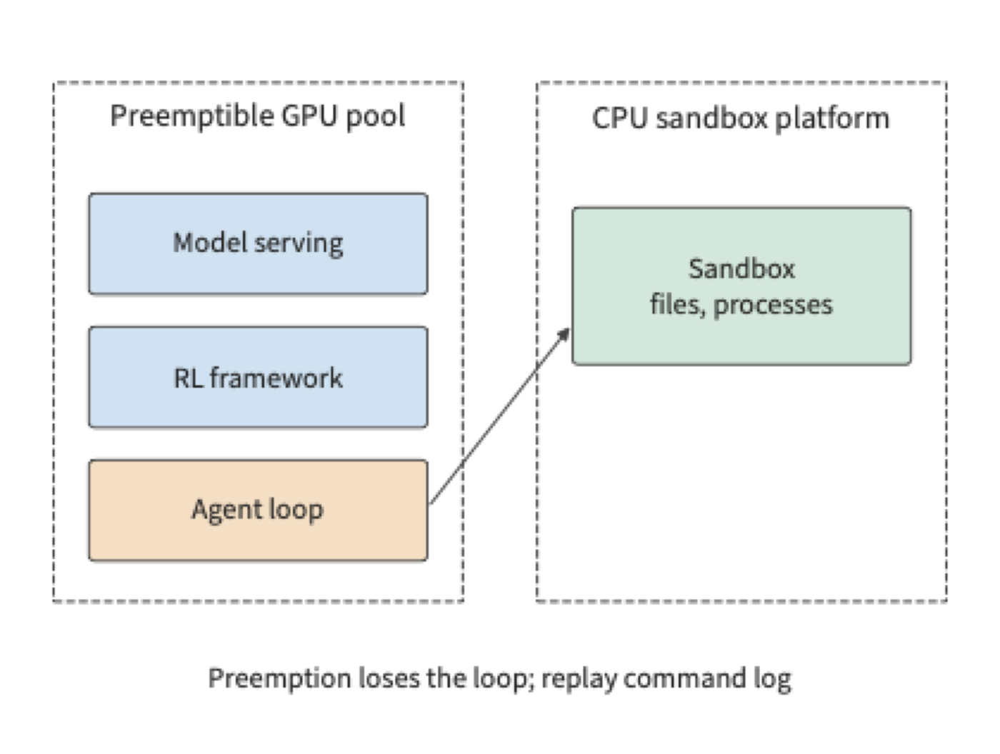
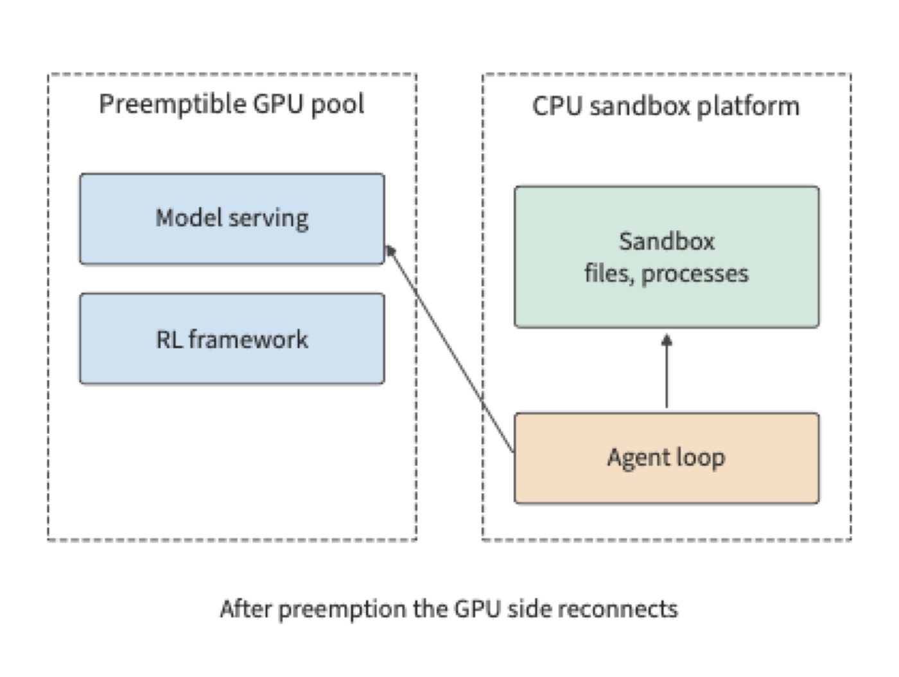
Starting with DeepSeek V4.1, the agent loop runs in a worker container on DSec, off the preemptible GPU resources, and together with the sandbox holds the complete rollout state (Figure 11-34). When the GPU job recovers, it reconnects and carries on, and the training framework no longer needs replay logic. In effect the change moves where the state lives: state kept on the longest-lived resource is not lost when a shorter-lived one fails. The frequently preempted GPUs only do computation that can be redone if lost, while trajectory state that must survive interruptions goes to the CPU platform, which is not preempted.23
11.3.4 Verification batches, long tails, and resource release¶
Section 11.3.3 treats verification as a single block of work that follows generation entirely; in practice, samples are often generated one after another, and verification can begin earlier — what the training update must wait for is the last result across the whole verification batch. Verifying CUDA code requires first compiling on the CPU, then executing on the GPU. Scheduling verification tasks requires considering not just CPU capacity but also the interference concurrent execution causes to GPU performance measurement. DSec gives this kind of verification its own GPU backend, with three measures: MIG splits a GPU into isolated instances so several measurements can run at once without disturbing each other; code is compiled on CPUs first and only the result is handed to the GPU, so compilation does not hold a GPU; and a pool of Python processes that have already initialized and imported their libraries runs the operator as soon as a request arrives. All three cut the time the GPU spends on anything other than measurement.23
If sample \(i\) arrives at time \(a_i\), and successively requires \(c_i\) seconds to compile and \(g_i\) seconds to execute, then ignoring resource contention, the lower bound on the whole batch's completion time is
Insufficient execution processes cause queueing, and starting processes and transferring data also take time — all of these further delay the batch's completion moment. Submitting already-generated samples as early as possible lets verification overlap with subsequent generation. The two arrangements in Figure 11-35 and Figure 11-36 both require 30 seconds of verification processing time, yet their completion moments differ by 20 seconds; the only difference is submission timing.
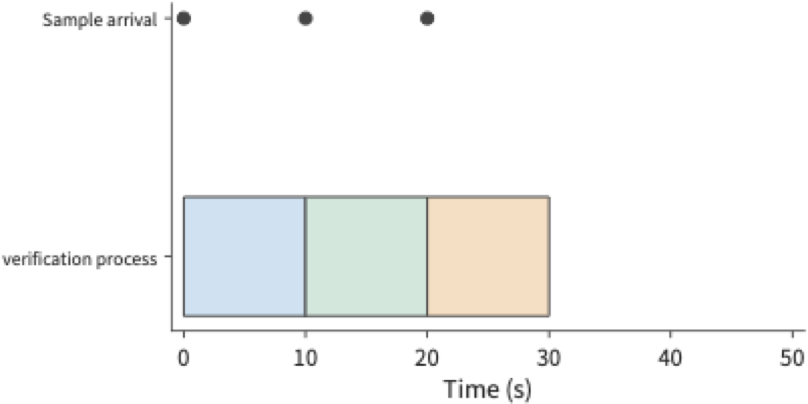
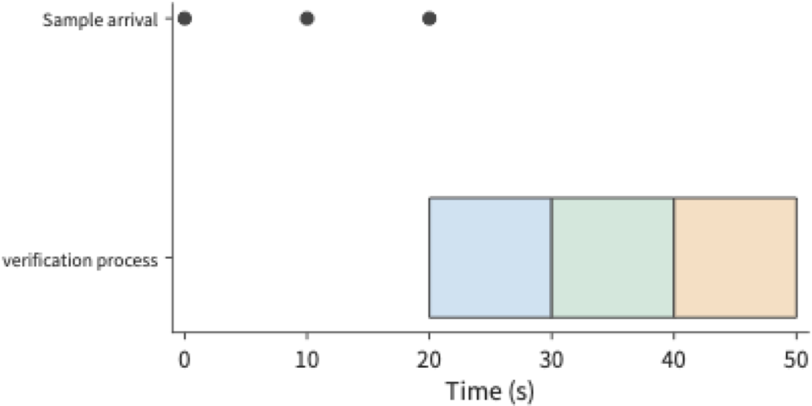
Per-sample submission eliminates the gap spent waiting for the whole batch to be generated, but the batch's completion time can still be determined by its single slowest verification. Estimating how much longer such a long-tail task will still run requires updating the estimate based on how long it has already run. Suppose, from existing measurements, nine verifications each take 1 second and one takes 100 seconds, averaging 10.9 seconds. If some verification has already run for 10 seconds without finishing, subtracting 10 from 10.9 would predict only 0.9 seconds remaining. Yet within this discrete distribution, that verification must be the 100-second one, and so still needs 90 more seconds. The remaining time should therefore be estimated conditional on the task not yet having finished, i.e., \(E[S-e\mid S>e]\), where \(S\) is a verification's total execution time, \(e\) is the time already elapsed, and \(E[\cdot\mid S>e]\) denotes averaging only over samples that have not yet finished. DistRS's scheduling algorithm adopts this kind of conditional remaining time rather than always using the overall average.10
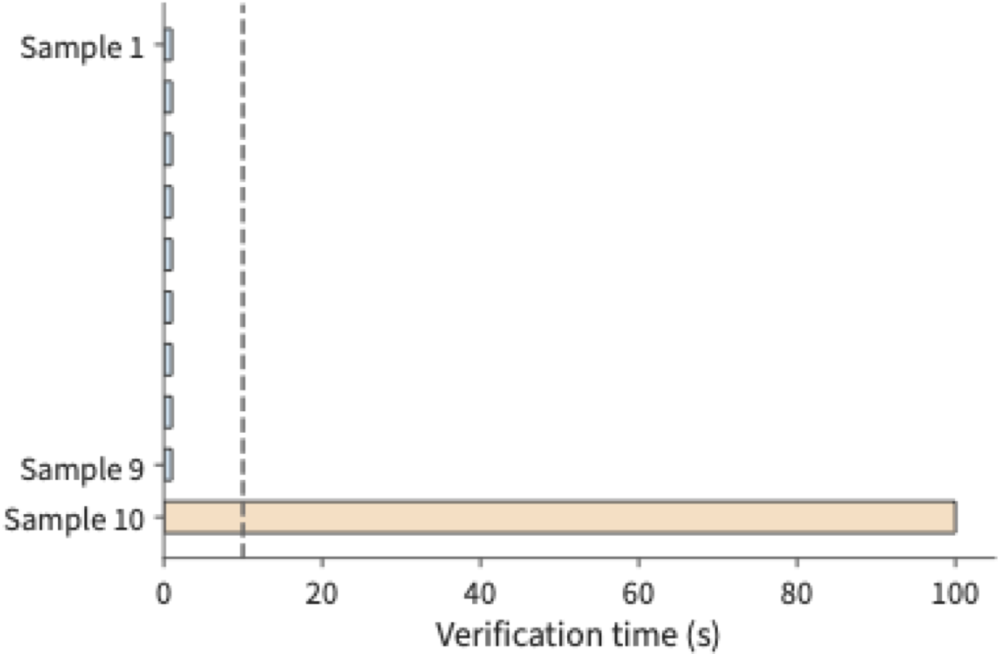
Once each sample's remaining time is estimated, other verifications can be scheduled accordingly to avoid, as much as possible, extending the whole batch's wait. Suppose one sample in the batch will not finish until, at the earliest, second 120. To schedule a piece of work requiring no more than 100 seconds of execution, that work must start no later than second 20 in order to use the preceding gap without delaying the batch; if its environment preparation takes 5 seconds, preparation must start no later than second 15. Working backward from the batch's completion moment yields the latest permissible start time for each piece of work, letting the scheduler defer non-urgent work and give resources first to batches with earlier deadlines.
Deferring non-urgent verification can reduce verification-resource usage, but if it delays the whole batch's completion, it also makes the training group wait longer. Suppose deferring verification saves 60 H100·seconds, but makes a training group still holding 64 H100s (8 HGX H100 units) wait 2 seconds longer. The training group then adds \(64\times2=128\) H100·seconds, for a net system-wide increase of 68 H100·seconds. If the training group has only 16 cards (2 units), the added wait is 32 H100·seconds, and the system instead nets a savings of 28 H100·seconds. Whether it is worth shrinking verification resources therefore depends on the size of the training group being blocked.
Once completion times are scheduled, one must still confirm that tasks that finish or time out have actually stopped executing before their resources can be handed to the next task. In one controlled verification, after the waiter returned a timeout, the background thread kept running for about another 130 ms; after actively terminating the child process, the process's exit was observed after about 0.8 ms. If the same resource is handed to the next task as soon as a timeout occurs, while only reporting the timeout without terminating the background thread, the two tasks will end up using the resource simultaneously. For CUDA performance verification, this kind of contention can even alter the measured execution time and reward.11
11.4 Selection of Model Service and Call Cost¶
11.4.1 Task Quality and Thinking Budget¶
Rebuilding the environment each round has already brought the platform's memory requirement from the chapter opening down from 600 GiB to 180 GiB, but task completion time is still 30 seconds, exceeding the 24-second target. So we need to change the model call on the critical path. Reducing the number of sessions each V4-Flash replica serves concurrently from 32 to 16 lowers the time per output token from 25.3 ms to 16.9 ms; a complete call generating 355 tokens drops from 9 seconds to 6 seconds, so three rounds go from 30 seconds down to 21 seconds; the model itself is unchanged, and the task pass rate stays the same. If the environment stays resident throughout, the occupancy per task also drops from 60 to 42 GiB·seconds, bringing the platform's total memory requirement from 600 down to 420 GiB — still above the 358 GiB budget; if the environment is instead rebuilt each round, it only needs to be retained during each round's preparation and execution, keeping cumulative occupancy at 18 GiB·seconds. The choice of model service therefore affects both task duration and environment memory requirements simultaneously.20
The model choice also determines the cost composition of each call. The time and cost of a model call consist of three parts: processing the input, generating thinking tokens, and generating the visible output. The thinking budget determines how much internal reasoning is allowed to be generated, and actual usage determines how much each call costs. First, under the condition that both settings pass the tests, we compare the per-call cost of two thinking-length settings, and then compare the cost each requires to complete three rounds of the task.
Example 11-5: If thinking length is shortened to one-tenth, how much does total cost decrease? Suppose both thinking-length settings pass the same tests, each call has 10,000 input tokens and 200 visible output tokens, with actual thinking of 1,000 and 100 tokens respectively. Pricing follows the standard API price for Claude Sonnet 5: 2 per million input tokens, 10 per million generated tokens, with thinking tokens billed as generation. Then the per-call cost (in dollars) is respectively
The number of thinking tokens drops to one-tenth of the original, yet total cost decreases by only about 28%. Of the original cost, 0.020 goes to input and 0.002 to visible output — both unchanged; what drops is the thinking cost, from 0.010 to 0.001. Thus, the proportion of the original cost attributable to thinking determines how much compressing thinking can save.3
Figure 11-38 marks out exactly where the savings occur. This comparison assumes both settings can complete the task; if shortening the thinking requires a retry, the savings shown in orange must be weighed against the full cost of an additional retry call.
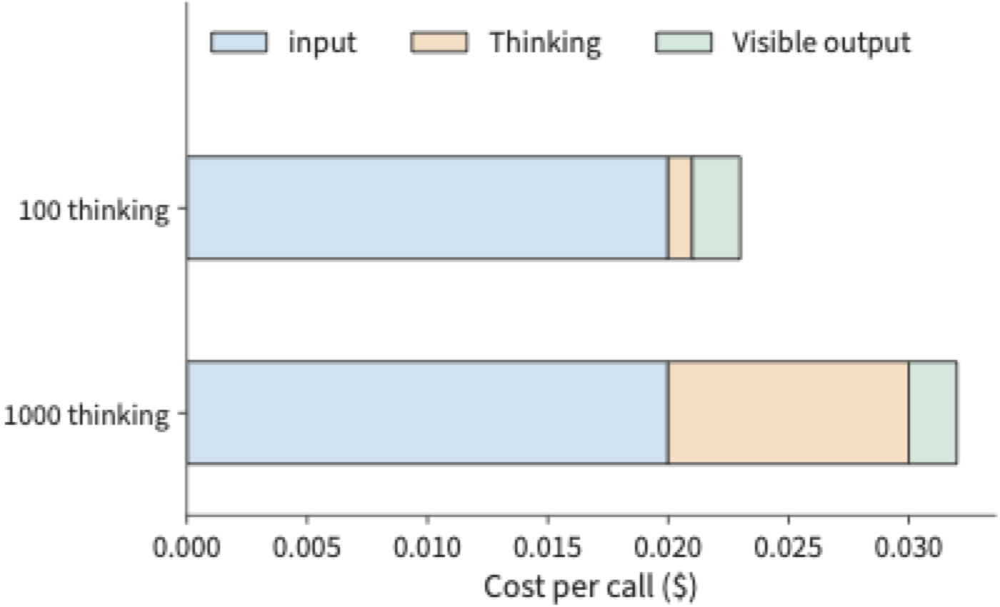
Suppose 100 calls each save 0.009, for a total saving of 0.9; but 30 of them require a retry due to budget truncation, and each retry costs 0.032, adding 0.96. The total cost actually increases by $0.06. Shortening the thinking budget can increase the number of retries. Therefore, when comparing total task cost, one must account for both the per-call savings and the extra cost of additional retries.12
11.4.2 Service Path, Prefix Caching, and Actual Usage¶
Section 11.4.1 relied on reducing generation volume to lower cost; the main saving opportunity on the input side is repeated prefixes: multiple calls within the same task typically resend a common prompt and prior conversation history. A model request enters from the controller into a unified service endpoint, which then hands it to the selected model backend. Here "backend" refers to the inference instance or service provider that actually executes model inference. The endpoint handles authentication, routing, and rate limiting; the backend handles input processing and output generation. The 30 calls per second from the chapter opening create sustained demand on this path; how much of each call's input can be reused is determined by the common prompt and task history it carries.
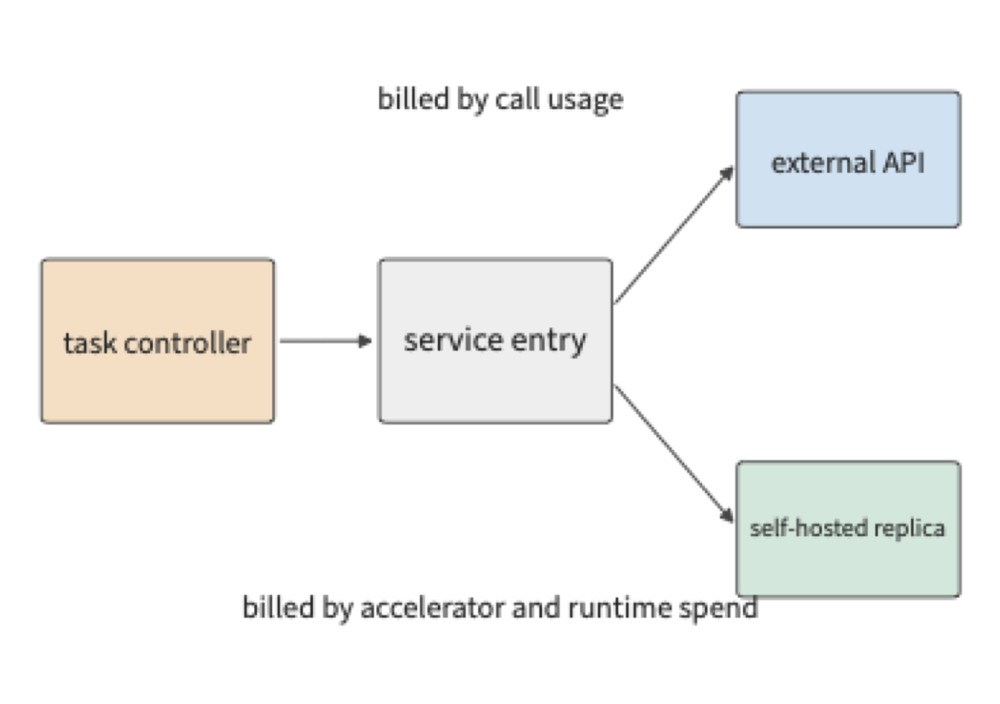
Splitting a single call's input into mutually exclusive ordinary input \(I_u\), cache-creation input \(I_w\), and cache-read input \(I_h\), with billed generated token count \(O\), and corresponding per-million-token prices \(p_u,p_w,p_h,p_o\), gives
Within a single call, any given input token belongs to exactly one of these three categories: ordinary input, cache creation, or cache read. Organizing the usage record returned by the service into these three categories, multiplying each by its corresponding unit price, and summing gives the input cost. The generated token count \(O\) is the sum of thinking tokens and visible output tokens.
Example 11-6: How much input cost can be saved by caching a common prefix across rounds? Each round has 8,000 tokens of common prefix and 2,000 tokens of new, non-reused input. Under Claude Sonnet 5's standard pricing, ordinary input costs 2 per million tokens, the first creation of a 5-minute cache costs 2.5, and cache reads cost 0.2. The cache is created on the first call and hits on all nine subsequent calls within its validity period. Without caching, the input cost for ten rounds is 0.20; with caching (in dollars) it is
This example keeps generation and tool execution identical across the ten rounds, so the entire cost difference being compared comes from input. The first call using the cache costs 0.024, which is 0.004 more than ordinary processing's 0.020; each subsequent round costs only 0.0056, which is 0.0144 less than ordinary processing. So the second access already recovers the premium paid for the first creation. With \(n\) total accesses, caching is more economical when \(np_u>p_w+(n-1)p_h\). The longer the cache's validity period, the more opportunity repeated reads have to recover the extra cost of the first creation.3
How much the cache saves also depends on which requests hit it. Consider two calls, one with a 1,000-token prefix and one with a 9,000-token prefix. If only the short prefix hits, the request hit rate is 50%, yet the number of cache-read tokens is only 10% of the combined prefix length of the two calls; if only the long prefix hits, the request hit rate is still 50%, but the read share becomes 90%. Under per-token billing, the latter saves far more on input processing cost than the former. The weight of each hit is determined by the input length.
11.4.3 Queueing, Rate Limiting, and Model Routing¶
The cache can only be reused when a request reaches a backend that has already saved the corresponding prefix. So the choice of backend affects both hit rate and queueing time. To use an existing prefix cache, it is sometimes worth waiting a bit longer. Suppose backend A running the same model queues for 200 ms, and processing the prefix after a hit takes 50 ms; backend B queues for 20 ms, and processing after a miss takes 500 ms; shared network time is 50 ms, and subsequent generation is the same. Before entering generation, A takes 300 ms and B takes 570 ms, so A leads by 270 ms. The cache hit saves 450 ms of processing time but adds 180 ms of queueing time, for a net benefit of exactly 270 ms. When A's queueing time rises to 470 ms, the two spend the same amount of time before generation begins.
The 30 model calls per second from the chapter opening are also constrained by concurrent capacity. When each call takes 9 seconds, on average 270 calls are executing at once; shortening this to 6 seconds reduces it to 180. But the faster service is achieved by shrinking each replica's batch: since each replica serves only 16 sessions concurrently, 10 replicas provide only 160 concurrent slots, which cannot accommodate 180 calls, requiring an increase to 12 replicas (48 B200 cards). The GPU time occupied per call also rises from \(4\times9/32=1.125\) B200·seconds to \(4\times6/16=1.5\) B200·seconds. Pay-as-you-go APIs, meanwhile, usually cap request count and token count per unit time separately; if each call's input or output grows, the token quota may be exhausted before the request-count quota. When selecting model service, one must separately compare request queueing time, concurrent call capacity, and token processing capability to find the factor that limits task completion speed.
Example 11-7: When can cache hits and success rate offset a higher service unit price? Submit 1,000 single-call tasks each to Claude Haiku 4.5 (denoted A) and Claude Sonnet 5 (denoted B). Each call has 20,000 input tokens, of which 19,000 are common prefix and 1,000 are new input. The prefix cache is already established, with no additional cache creation, storage, tool, or warmup cost, and task acceptance probability is independent of whether the cache hits. Unit prices follow the two models' standard API pricing, and thinking token counts and success probabilities are given.13
| Parameter | A: Haiku 4.5 | B: Sonnet 5 |
|---|---|---|
| Ordinary input price / $ per million tokens | 1 | 2 |
| Cache read price / $ per million tokens | 0.1 | 0.2 |
| Generation price / $ per million tokens | 5 | 10 |
| Actual thinking tokens | 1,800 | 100 |
| Visible output tokens | 200 | 200 |
| Success probability under the same acceptance rule | 0.80 | 0.98 |
A's prefix always hits, with a per-call cost of 0.0129, giving a successful-task average cost of \(0.0129/0.8\approx0.0161\). B's per-call cost when fully hitting is 0.0088, and 0.0430 when missing. Letting B's request hit rate be h, we get
Setting B's average cost equal to A's average cost gives \(h\approx79.5\%\). Although each of B's token unit prices is twice A's, B is more economical at high hit rates because it generates less and succeeds more often. When the hit rate drops to 50%, B's successful-task cost rises to about 0.0264, at which point A is cheaper.
Now additionally require at least 90% of submitted tasks to pass acceptance within 6 seconds. Suppose the complete request duration is: 10 seconds for A; 4 seconds for B on a hit, 12 seconds on a miss, both already including queueing and generation. A fails to meet the deadline; B needs \(0.98h\geq0.90\), i.e., \(h\geq91.8\%\).
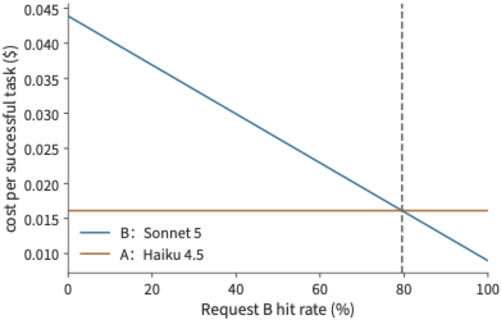
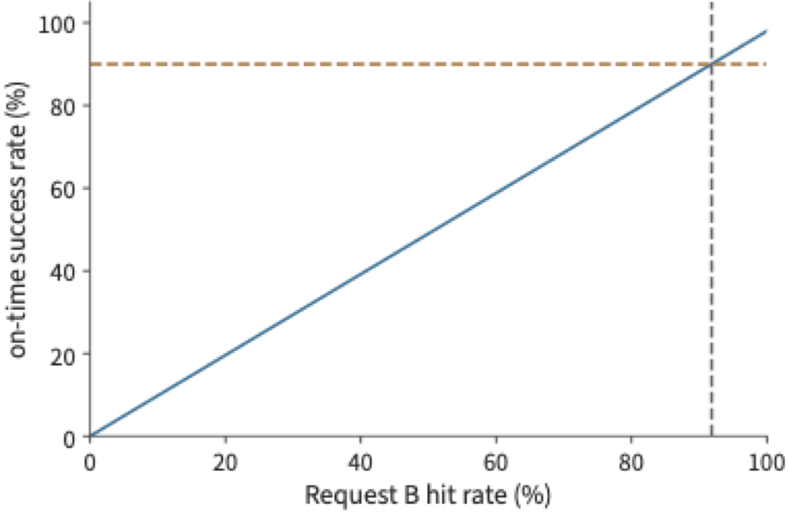
In this example, each prefix is always 19,000 tokens, so the request hit rate \(h\) also equals the internal token-hit proportion of the prefix; relative to the full 20,000-token input, the cache-read share is \(0.95h\). The cost crossover is about 79.5%, and the business threshold is about 91.8%. Moving right from a low hit rate, B first becomes cheaper, and only later meets the on-time completion target. Placing the service target on the cost curve lets us read off the final feasible region directly.
11.4.4 Cost Comparison Across Self-Hosted Service, Pay-as-You-Go API, and Subscription¶
The routing comparison determined which model services simultaneously satisfy quality, cost, and deadline requirements. Once a service is chosen, we still need to decide whether to self-host, pay per call, or purchase a subscription. Model selection determines what service each task requires; the procurement method determines how to pay for that service. Self-hosted capacity pays device and reservation costs up front, later amortized across tasks; a pay-as-you-go API charges per call; a subscription charges a fixed fee per month or other period, granting usage rights to the corresponding product. The common question across all three is: how does total spending vary with usage volume once the same task volume must be satisfied?
Suppose over a fixed statistical window, self-hosted reservation and fixed cost are \(F\), the marginal cost per submitted task is \(v\); the API's average cost per task is \(c\). If the success probability is the same for both and processing capacity meets demand for both, the condition under which self-hosting is more economical for \(N\) tasks is
If \(c\leq v\), the API's per-task cost is already no higher than the self-hosted marginal cost, and since the fixed investment is positive, the API is more economical at all usage levels. If the success rates differ, the denominators become \(Np_{\mathrm{self}}\) and \(Np_{\mathrm{api}}\) respectively, and the comparison becomes one of cost per successful task.
Below, we compare the two payment methods using the same model and the same GPU type, with identical batch size and task quality on both sides — the only difference is the billing method. The reservation option rents 4 cards for a month (720 hours) at the price published by GPU cloud platform Runpod for its B200 Pod (billed hourly, dedicated GPU instance) — 6.79 per GPU-hour — giving \(F=4\times720\times6.79=19{,}555.2\) dollars; since the GPUs are paid for the whole month, the marginal cost \(v\) per task is 0. The pay-as-you-go option uses the same platform's per-second-billed B200 Serverless worker (8.64 per GPU-hour), paying by usage just like a pay-as-you-go API, and likewise runs with a batch of 32 sessions. Following the chapter-opening task, each task involves three calls, each occupying 1.125 B200·seconds, giving a pay-as-you-go cost of \(c=3\times1.125\times8.64/3600=0.0081\) dollars.
The task volume at which the costs are equal is \(19{,}555.2/0.0081\approx241\) million tasks. Since each task occupies one session for 27 seconds, these 4 B200 cards can process at most \(32\times2{,}592{,}000/27=307.2\) million tasks in a month, and the crossover corresponds to about 78.6% utilization — exactly the ratio of the two unit prices, \(6.79/8.64\). At 1 million tasks, reservation still costs 19,555.2 while pay-as-you-go needs only 8,100; at 3 million tasks, pay-as-you-go needs 24,300 and reservation is more economical. The fixed investment is hard to amortize at low usage, but at high usage it is offset by the lower marginal cost.
In Figure 11-42, the reservation cost is a horizontal line, whose height comes from the whole month's rent, ending at the right at this group of GPUs' processing ceiling; the pay-as-you-go cost starts from zero, with a slope determined by the GPU time occupied per task. Once execution efficiency improves, the same 4 B200 cards can process more tasks per month, extending the reservation line to the right and lowering the pay-as-you-go line's slope; the crossover still corresponds to the same utilization, namely the ratio of the two unit prices.
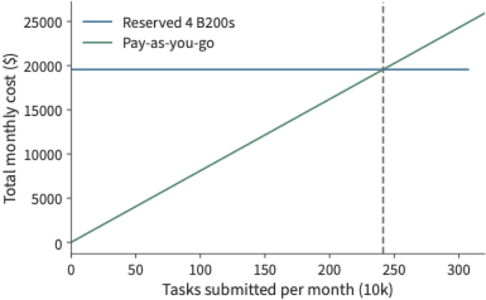
How much execution efficiency can improve depends on where the time is spent. Still taking as an example the deployment running DeepSeek V4-Flash on 4 B200 cards, serving 32 sessions concurrently, each session retaining a 200K-token context, with session count and GPU rental price held constant. Each output token takes about 25.3 ms, of which per-token decode accounts for 15.9 ms, with the remaining 9.4 ms spent on input processing and context reconstruction. Once decode's actual speed doubles, the time needed per output token drops to \(15.9/2+9.4\approx17.4\) ms, an overall speedup of about 1.46×, bringing GPU cost per million output tokens down from about 6.0 to 4.1.14
Of the original time per output token, about 63% was spent on decode and the remaining 37% is unaffected, so a twofold decode speedup can shorten total time by only about 31%. Even reducing decode time to zero, the remaining processing still needs 9.4 ms. This 9.4 ms must be split again according to the criterion in Section 1.3.4: reading the KV cache and reconstructing context is necessary work, and the time computed from bandwidth forms a new lower bound; scheduling, copying, and format conversion are removable software overhead — and that is where the optimization headroom lies. Breaking through this limit requires further optimizing input processing and context reconstruction; only when the same set of accelerators generates more tokens per unit time can the fixed rental price be amortized over more output.
The code-fixing platform from the chapter opening calls the model 30 times per second. The faster service occupies an extra 0.375 B200·seconds per call, costing about 0.00071 more at Pod pricing, so the platform spends an extra 0.021 per second; this extra cost brings task duration down from 30 seconds to 21 seconds, meeting the 24-second deadline. At the end of the chapter, we will jointly compute the added model cost and the saved environment-occupancy cost, comparing the total task cost of each scheme.
11.5 Complete Task Recovery, Cost Calculation, and Scaling¶
11.5.1 Recovery After Tool Failure and Model Selection¶
In Section 11.4, model selection mainly considered the case where calls complete normally. In actual operation, we also need to handle call failures, lost results, and tool anomalies. If the controller does not receive a confirmation message that a test has completed, it cannot distinguish between two situations: the test has not yet completed, or the test has completed but the confirmation message was lost.
During recovery, the controller first queries the persisted results, checking the operation identifier and input file version. If the result exists, it can proceed; if not, it then determines whether a retry is permitted. An idempotent operation is one where repeated invocation with the same operation identifier produces the same final business effect as a single invocation. Repeating a read-only query or idempotent operation is usually not a problem; repeating an external payment, resource creation, or message send, however, may cause the same operation to actually occur twice, requiring the target system to support operation identifiers, transactions, or compensation.
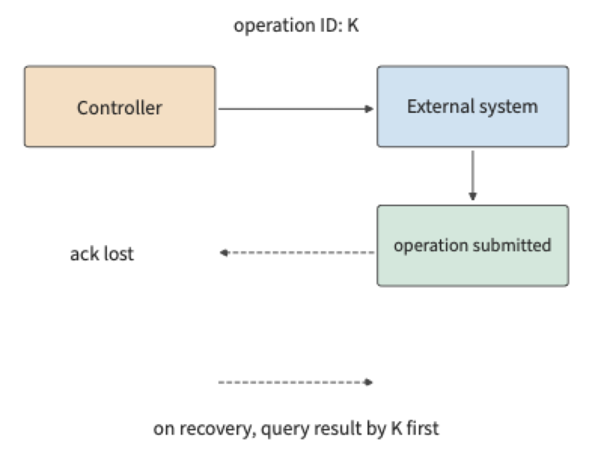
Suppose executing a tool once takes 3 CPU·seconds, and the result is sent twice. If the receiver deduplicates by operation identifier, cumulative CPU time remains 3 seconds; if the controller re-executes because the confirmation was lost, cumulative CPU time rises to 6 seconds. Both cases may end up with only one result, yet they consume different resources. Message deduplication resolves the former kind of duplication; the latter kind must be avoided through persisted results and the target system's idempotency protocol. Operations already committed outside the environment still exist after snapshot recovery, so the recovery flow must first query their commit status.15
However, a request returning normally does not mean its record can necessarily be found during recovery. Traditional operating systems also distinguish "write completed" from "already persisted." Take buffered writes to an ordinary file as an example: when write() returns, the data may still be in the kernel's page cache, and the program can continue computing while the operating system writes it out in the background. If the program must wait until the data is safely stored before continuing, it needs to call fsync(), waiting for the file data and necessary metadata to be written to the storage device, and checking whether it succeeded.16
The agent runtime also needs to clearly specify: when reporting completion to the caller, does it only guarantee that the answer has been generated, or does it guarantee that messages, tool results, and the recovery position have all been saved? These conventions constitute the persistence semantics. Calling fsync() on just the chat log is not enough, because the information needed for recovery may be stored separately in the log, the working directory, and an external database; the controller must also check that the operation in the message, the file in the directory, and the result in the database are all consistent.
Here we save by round of the ReAct loop: each round includes one model output, the tool call it triggers, and the returned result, which may include multiple messages. The controller appends this round's record to a local JSONL file, and only proceeds to the next round after confirming the whole round saved successfully; if saving fails, it aborts immediately. So locally, execution never continues into and saves subsequent rounds after a round's save has failed. "Saved successfully" here still needs to specify what kind of failure it can withstand: writing to the local page cache, completing a local fsync(), or receiving cloud persistence confirmation offer different guarantees. A local file can support recovery after a process restart, but may not handle the entire machine and its disk becoming unavailable.
To reduce waiting, one can also save to local storage first each round, then upload that round's new records in the background. Suppose an upload failure is not retried immediately, nor does it abort local execution: round one runs a test and gets a failure result, round two modifies code and gets a tool confirmation, round three runs the test again and gets a new result. All three rounds' records are written locally to JSONL, but round two's upload fails while round three's upload succeeds (Figure 11-44). At this point the local history is complete, but the cloud is missing round two's model output and tool result. If the local machine subsequently becomes unavailable, and recovery relies solely on the cloud record, this gap will be encountered. If instead each upload is a complete snapshot including all prior rounds, or the uploader must fill in failed records before continuing, this example no longer applies.
![Figure 11-44: The initial state has already been saved both locally and to the cloud; each column represents one ReAct round. Each round saves locally first, then asynchronously uploads that round's new records; this example allows execution and uploading of subsequent rounds to continue after an upload failure. After round two's upload fails, even though round three's upload succeeds, the cloud history remains complete only through round one. The horizontal arrangement indicates round order, not elapsed time.](images/figure-11-recovery-coverage.png)
When using this kind of asynchronous saving, the controller must track local and cloud save progress separately. The cloud must record not only the last round received, but also how far it has been saved continuously from the start. Just because round three's upload succeeded does not mean the continuous-save position can be changed from round one to round three; only after filling in round two, or rebuilding and checking against a complete local copy, can one confirm that the cloud history is also complete through round three.
The same applies when deleting old logs. To delete the records of the first two rounds, one must first save a complete state that can restore to the end of round two, and submit that state together with the corresponding round. During recovery, if neither the earlier complete log nor this state can be found, then even after reading all the remaining log, the system should return incomplete, indicating there is not enough basis to confirm the history is complete. If the interface allows recovery to a specific message position, it must also confirm whether that position corresponds to a saved complete round, and check the working-directory version; if a within-round position was not saved separately, recovery to that point cannot be promised. Operations already committed to an external system are likewise not undone by rolling back messages.17
For the code-fixing task in this chapter, we can borrow the approach of database transactions, treating one round of "model decision — tool execution — result saving" as a single unit to commit. Only after this round's model message, tool result, and relevant file versions have all saved successfully does the controller record this round as committed; after a restart, execution resumes from the result of the last fully committed round. This is also a topic studied under agent transactions: how to achieve atomicity, consistency, isolation, and durability — the ACID properties from databases — in agent execution.18 If a round's operation also calls an external service, that service needs to support operation identifiers, idempotent interfaces, or compensation handling; merely recording "committed" locally cannot guarantee the external operation also completes exactly once.
The more frequently one saves, the less rework is usually needed after a failure, but the greater the overhead during normal execution. Compare this with a small worked example: 100 requests are executed in sequence, each taking 200 ms; each persistence commit has a fixed overhead of 8 ms, plus 2 ms for each request's record written. Assuming request processing pauses during a commit and ignoring other overhead, the results are as follows.
| Save method | Total save time | Total time without failure | Max recomputation time after failure |
|---|---|---|---|
| Commit after every request | \(100(8+2)=1000\) ms | 21 s | 0.2 s |
| Commit every 10 requests | \(10(8+10\times2)=280\) ms | 20.28 s | 2 s |
Committing every 10 requests together saves 0.72 s in normal execution; but if a failure happens right before a commit, the 10 requests must be redone, amounting to 2 s of computation. This assumes each commit either fully succeeds or has no effect at all, that all uncommitted requests need to be redone, and that the tool allows safe retries; the table does not include time for rebuilding the environment or re-saving. If asynchronous saving is used instead, the controller can process subsequent requests while writing out already-available results at the same time. How much rework is needed after a failure depends on how many records were not yet saved at that point. So when comparing save methods, besides task completion time, one should also record the number of requests returned but not yet saved, and check exactly where recovery can actually resume from after a restart.
We still need to answer the two questions raised repeatedly throughout this book: where the data lives, and who must wait for it. Section 11.2 released the tool environment during model calls to save memory. This is valid only if the state needed for the next round has already been saved outside the environment, or can be recomputed after being lost. If the only copy of a result still resides in the environment's memory, the controller must wait for it to finish saving before releasing the environment, otherwise it can only redo the work after the loss. Therefore, when the scheduler allocates resources, it must also account for the wait time for saving state and the cost of rework after a failure.
Once we've confirmed where execution can resume from, the controller can also choose to switch to a stronger model. If the original model has already completed two rounds, and the patch and test results have also been fully saved, the new model can pick up from there without redoing the first two rounds. This only requires paying for the next model call and may improve the success probability. How much chance later fixes have depends on why the earlier attempt failed. So below, when computing the probability of each branch in the recovery tree, we always condition on the task having already reached that node.
11.5.2 The Complete Cost of a Successful Task¶
Retrying after failure or switching to a different model both cost extra, so the price of a single call alone cannot tell us how much a completed task actually cost. We should sum the spending from both successful and failed attempts, then divide by the number of tasks actually completed. Let \(C_{\mathrm{all}}\) be the total spending during the measurement period, \(N_q\) be the number of tasks that met the quality requirement, and \(N_{q,d}\) be the number of those completed on time. The average cost per successful task and per on-time successful task are then
Failed attempts also consume model and tool resources and cannot be subtracted from total spending. For example, if ten tasks together cost 1 dollar and five succeed, the platform actually pays 0.2 dollars per completion. If we count only the 0.5 dollars spent on the five successful attempts, we get 0.1 dollars — exactly half the actual spending is missing.
This per-unit cost can also be estimated in advance, before deployment, using a finite retry tree. For path \(\pi\), let \(p_\pi\) be the path probability and \(c_\pi\) be the sum of costs across its steps; then \(E[C]=\sum_\pi p_\pi c_\pi\). The success probability is the sum of the probabilities of all final successful paths. The probability at each node should be computed based on the execution outcomes experienced so far; if the follow-up success rates differ between two kinds of failure, they should be split into separate nodes.
Example 11-8: The effect of local repair on success rate and the fraction meeting the deadline. Take a small example where the first attempt requires 10 seconds, and compare the following finite recovery strategy. The first attempt uses Claude Sonnet 5, with 2,500 input and 500 output tokens, costing 0.010 dollars at standard pricing and taking 10 seconds; 80% succeed directly, 12% proceed to local repair, and 8% escalate directly — that is, retry with a more capable model. Local repair still uses Sonnet 5, with 1,500 input and 300 output tokens, adding 0.006 dollars and 4 seconds, with a conditional success rate of 60%; the rest escalate. Escalation switches to Claude Opus 5 (5 dollars per million input tokens, 25 dollars per million output tokens), with 3,000 input and 600 output tokens, adding 0.030 dollars and 8 seconds, with a conditional success rate of 98%. The 20-second deadline is used only for evaluation and does not actively terminate the task.19
In Figure 11-45, when local repair succeeds, the task ends at second 14; when repair fails and then escalates, this takes 4 seconds longer than direct escalation. After the overall success rate improves, some successful results still exceed the deadline, precisely because of this extra branch.
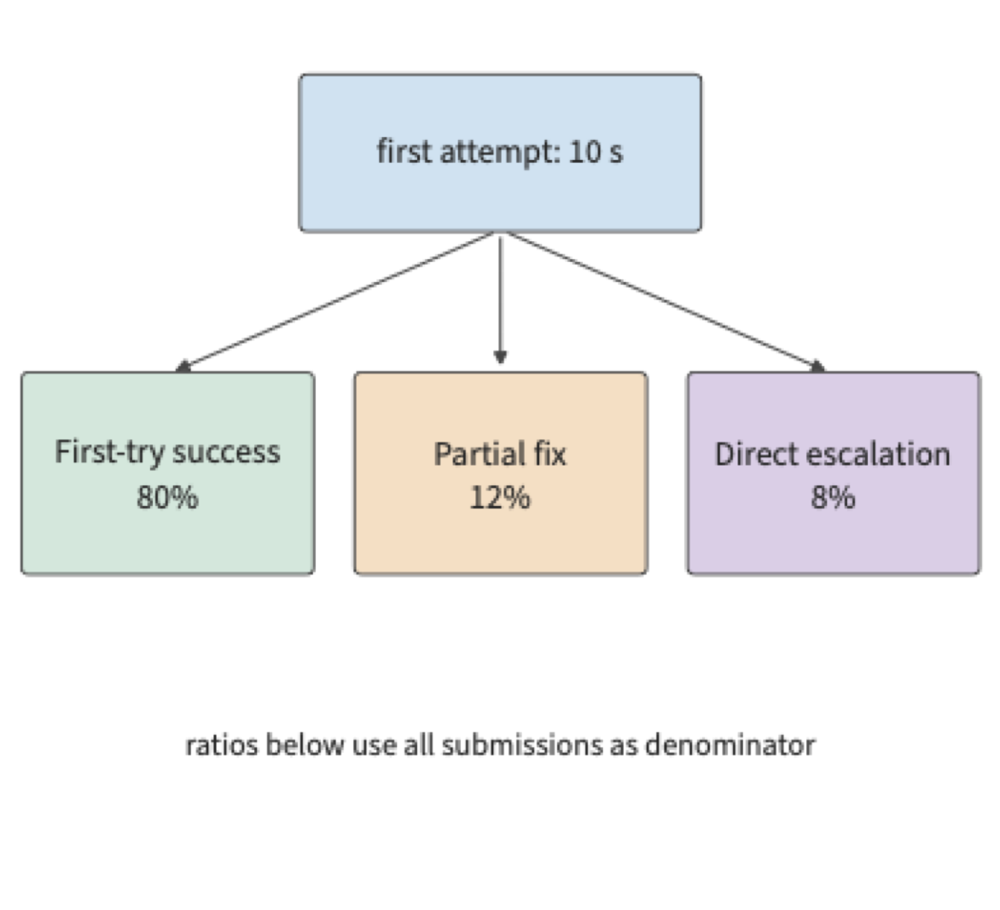
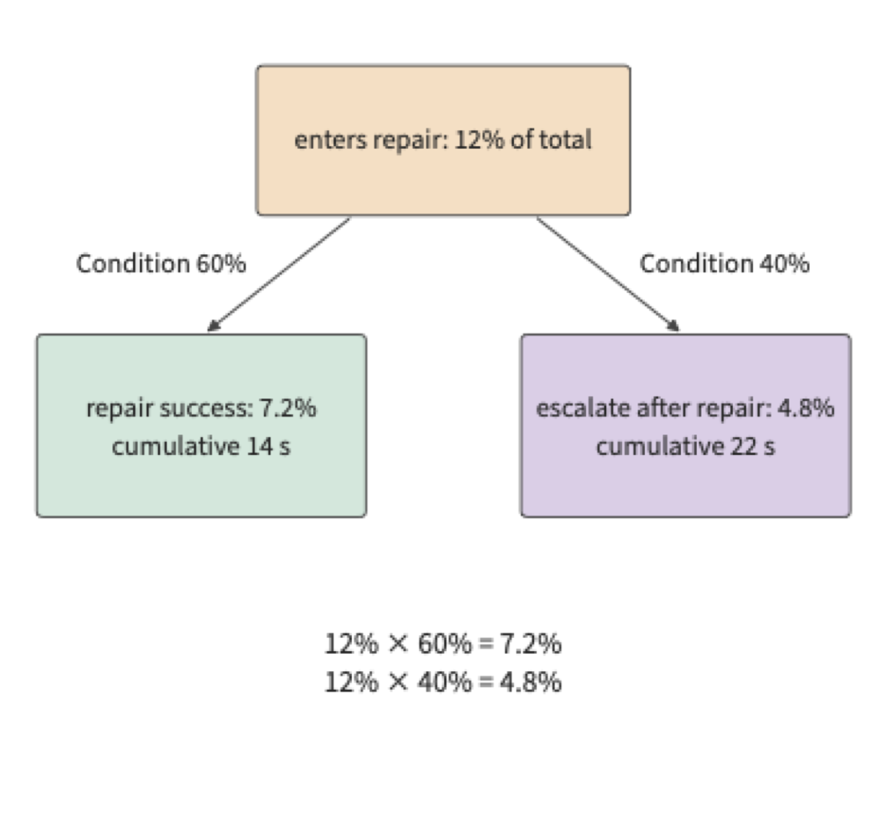
The six execution outcomes are as follows. The cost listed in each row is the total cost of the entire execution process, including spending from all prior attempts.
| Execution process and outcome | Probability | Total cost / USD | Time / s | Passed tests and completed on time |
|---|---|---|---|---|
| First attempt succeeds | 0.80000 | 0.010 | 10 | Yes |
| First → repair succeeds | 0.07200 | 0.016 | 14 | Yes |
| First → repair → escalation succeeds | 0.04704 | 0.046 | 22 | No |
| First → repair → escalation fails | 0.00096 | 0.046 | 22 | No |
| First → escalation succeeds | 0.07840 | 0.040 | 18 | Yes |
| First → escalation fails | 0.00160 | 0.040 | 18 | No |
We can compute this step by step over 1,000 submitted tasks. The first attempt costs 10 dollars, and about 800 succeed directly. 120 proceed to local repair, adding a cost of \(120\times0.006=0.72\) dollars, of which about 72 succeed; the remaining about 48, together with the 80 that escalate directly, give 128 escalations, adding a cost of \(128\times0.030=3.84\) dollars. Total cost is about 14.6 dollars, with a final success count of about 997.
The path of repair-then-escalation requires \(10+4+8=22\) seconds, exceeding the 20-second deadline. About 47 tasks pass the tests but exceed the deadline, so the on-time success count is about 950. The average cost per test-passing task is about 0.0146 dollars, and per on-time test-passing task about 0.0153 dollars; with only the first attempt, the cost is \(10/800=0.0125\) dollars, but the success rate is only 80%. Recovery raises the completion ratio and also raises the cost per completion. If the business requires at least 95% of submissions to succeed on time, this extra investment is needed; comparing only single-attempt cost would miss the completion volume it delivers.
![Figure 11-47: Cost and outcomes for the same batch of submitted tasks under different recovery strategies. Each bar uses the total spending of the corresponding strategy as the numerator, divided respectively by the number of tasks that pass the tests or the number that pass the tests on time; the success rate with only the first attempt is 80%, the finite recovery strategy reaches about 99.7%, of which about 95.0% of submissions succeed within 20 seconds. Branch probabilities, costs, and times are as in Example 11-8; the deadline is used for evaluation and does not force execution to stop.](images/figure-11-8-retry.png)
After adopting the recovery strategy above, the success ratio rises from 80% to about 99.7%, but about 4.7% of submissions do not complete until second 22. When counted against the 20-second deadline, these tasks consume resources but cannot be counted toward on-time completion. If we simply shorten the deadline used for evaluation, the execution process does not change — only fewer tasks get counted as on-time successes; if instead we limit the number of retries, the controller executes fewer steps, and both spending and success rate change accordingly.15
Beyond recovery strategy, we must also consider the effect of model acceleration. As the model becomes faster, environment preparation may no longer fully overlap with the model call, and it starts to affect task completion time. Suppose the next tool call is certain to occur: fast serving still needs 6 seconds to generate, while creating the environment via the cold path — when the template is not local — takes about 2.7 seconds; if environment creation begins when the model starts generating, this 2.7-second preparation fully overlaps with model generation. If the model stage shortens to 1 second, starting creation at the same moment still leaves about 1.7 seconds of waiting.24 First accelerate only the model call while keeping the preparation strategy unchanged; then compare the costs of three approaches — preparing earlier, keeping the already-ready environment, and waiting on demand — accounting for both the resources occupied by early preparation and the cost when an environment prepared in advance ends up unused.
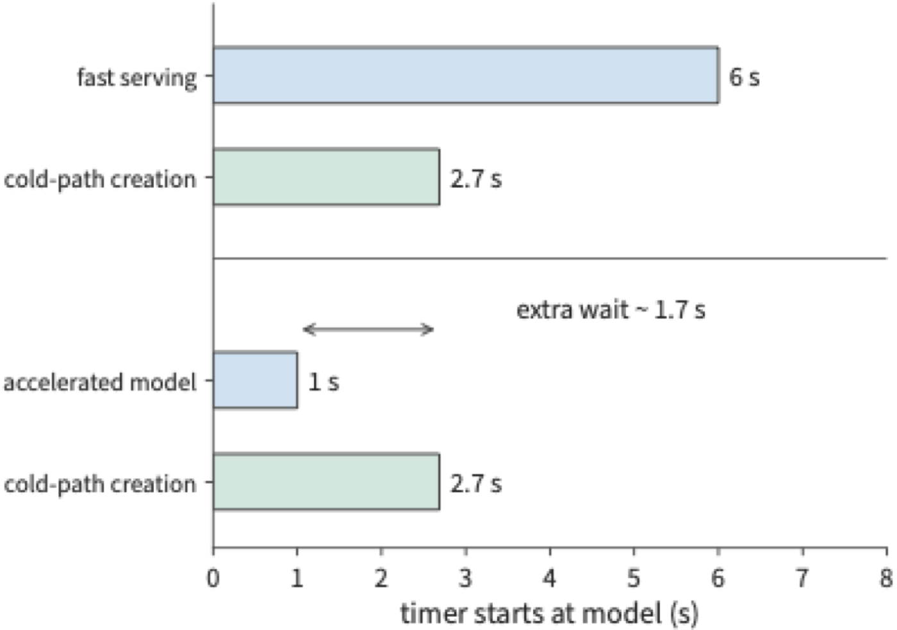
What must be rebuilt during recovery is not only the tool environment but also state on the model-serving side. This chapter's design example uses V4-Flash's computation time and cost; recovery of model-side state, however, is illustrated using the V4.1 Flash session tracked throughout the book, because its global KV can be retrieved, while local SWA state must be rebuilt by replaying the tokens at the end of the prompt (Section 3.2.4) — the two parts follow different recovery paths. Such a session, while waiting on the tool, retains two sets of state simultaneously: the operating system manages processes, files, and the environment, while the model service manages global KV and local SWA state. Recovering the task requires preparing these two sets of state separately, then merging them once the tool result enters the next round of model calls; already-executed external operations are confirmed by querying the target system.25 When environment preparation and KV retrieval can proceed in parallel, whichever finishes later determines the waiting time needed for recovery.
11.5.3 Scaling Choices for CPU, GPU, Memory, and Service Quota¶
Below, based on the 24-second completion deadline set out at the start of the chapter, we choose a scheme for model serving and environment management. We have already obtained three results: ordinary serving takes 9 seconds per call, 30 seconds for three rounds; fast serving takes 6 seconds per call, 21 seconds for three rounds; rebuilding the environment each round reduces the cumulative environment memory footprint per task to 18 GiB·seconds, with preparation costing an extra 0.3 seconds of CPU time.
Example 11-9: How should we choose the model-serving and environment-management approach to complete on time at the lowest cost? We continue with the conditions from the start of the chapter: one task arrives every 0.1 second, each executing three rounds; the tool platform is a 48-core m5d.metal with about 358 GiB of memory, and the model service currently has 10 V4-Flash replicas (40 B200 cards). Both serving modes run the same model, both achieving a 95% probability of passing tests, and whether a task passes tests is independent of its arrival time. Model calls are priced by B200 time consumed per call, at 6.79 dollars per card-hour: ordinary serving uses 1.125 B200·seconds per call, about 0.00212 dollars; fast serving uses 1.5 B200·seconds per call, about 0.00283 dollars. CPU and memory are billed at E2B's published sandbox rates — 0.000014 dollars per CPU·second and 0.0000045 dollars per GiB·second — both computed from actual usage. File persistence cost is already included in each round of tool execution; the platform's shared fixed spending is the same across all four schemes.20
First, we rule out "only adding CPU." The three tool rounds together take 3 seconds; even doubling tool speed, ordinary serving still requires \(27+1.5=28.5\) seconds; reducing tool time to zero still leaves 27 seconds of model calls. CPU scaling cannot shorten this serial path to under 24 seconds.
Next, compare environment strategies. Preparation work for rebuilding the environment each round overlaps with model calls, so it does not change completion time: ordinary serving remains at 30 seconds, while switching to fast serving reduces total model time to 18 seconds, plus 3 seconds of tool time, for 21 seconds total. So under fast serving, both always-resident and per-round rebuilding meet the deadline, and we need to further compare resources and cost.
Figure 11-49 first filters schemes by deadline: the ordinary model's last round finishes after the deadline, while all three rounds of the fast model finish within it. We then only need to compare cost between the two environment strategies under the fast model, while also checking whether platform capacity is exceeded.
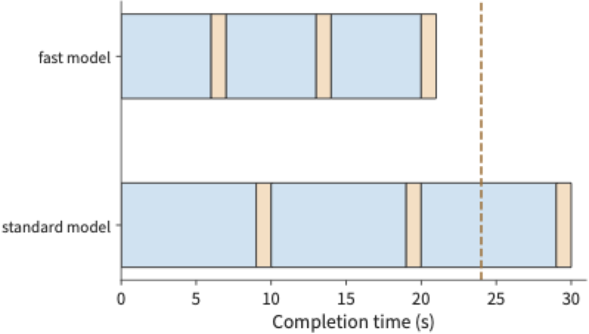
| Scheme | Completion time / s | Cumulative CPU time / CPU·s | Per-task cumulative memory footprint / GiB·s | Average memory / GiB | Cost per 1,000 submissions / USD | Fraction passing tests on time |
|---|---|---|---|---|---|---|
| Ordinary serving + always resident | 30 | 3 | 60 | 600 | 6.68 | 0 |
| Ordinary serving + rebuild each round | 30 | 3.3 | 18 | 180 | 6.49 | 0 |
| Fast serving + always resident | 21 | 3 | 42 | 420 | 8.72 | 95% |
| Fast serving + rebuild each round | 21 | 3.3 | 18 | 180 | 8.61 | 95% |
Taking the last row as an example, the three model calls together consume \(3\times1.5=4.5\) B200·seconds, costing about 0.0084875 dollars; CPU cost is \(3.3\times0.000014=0.0000462\) dollars, and memory cost is \(18\times0.0000045=0.000081\) dollars, totaling about 0.0086147 dollars — that is, 8.61 dollars per 1,000 tasks. Model cost accounts for over 98%, so the main benefit of rebuilding the environment each round lies not in cost but in capacity. With 10 tasks entering per second, tool execution and environment preparation together use, on average, 33 CPU cores and 180 GiB of memory — both within the capacity of the m5d.metal; fast serving + always resident, by contrast, would require 420 GiB, which this host cannot accommodate. On the model-serving side, an average of 180 calls are being processed concurrently; fast serving allows only 16 sessions per replica, requiring 12 replicas — 2 more than currently available.
The average demand of the chosen scheme satisfies the capacity requirement, but we must still confirm that each stage can be scheduled on time. Since tasks arrive uniformly, we can directly write out a schedule that satisfies the capacity constraint. Under fast serving, taking each task's arrival time as the origin, environment preparation occurs during seconds 4–6, 11–13, and 18–20, and tool execution runs during seconds 6–7, 13–14, and 20–21; preparation work uses a cumulative 0.1 CPU·seconds, evenly spread over the two-second window. With one task arriving every 0.1 second, once running steadily, each round's tool execution occupies 10 cores, and each round's preparation occupies one core; there are at most about 90 active environments, totaling 180 GiB. Each of the three model-call stages has, on average, 60 calls being processed simultaneously, for a combined 180 concurrent calls, while 12 fast replicas provide 192 concurrent slots. Executing on this schedule satisfies both the sequential dependencies between stages and stays within platform capacity.
Therefore, we choose fast serving with per-round environment rebuilding, completing preparation during the model call, and increasing the number of model replicas from 10 to 12. This scheme meets the 24-second requirement using the existing tool host, and is the only one of the four schemes that both completes on time and stays within this host's capacity. The average cost per 1,000 on-time test-passing tasks is about \(8.61/0.95\approx9.07\) dollars; fast serving + always resident, even with additional memory provisioned, would cost about \(8.72/0.95\approx9.18\) dollars — rebuilding the environment each round lowers this cost by only about 1.2%. Ordinary serving + per-round rebuilding is cheaper, but even when tests pass, it already exceeds the deadline.
Section 11.5.2 also showed that adding retries changes the on-time completion ratio. Here, the normal task completes at second 21, leaving only 3 seconds of margin; if, after eventual failure, we add one 4-second local repair, the result would not appear until second 25. So this example ends the task after three rounds; tasks that fail the tests directly return a failure result. If the business extends the deadline to 25 seconds, local repair would then have room to increase on-time successes, and at that point the conditional success probability and extra resources should be added into the recovery tree.
The choice above rests on the condition that the model call takes 6 seconds per round. As the model continues to accelerate, the idle window during which environment memory can be released also shrinks, requiring the environment strategy to be reconsidered. Whether to retain the environment or rebuild it can be judged by the waiting length at which the two schemes' costs are equal. Let \(G\) seconds be the wait needed between two tool executions for the model. Keeping a 2 GiB environment resident costs \(2G\times0.0000045\) dollars; destroying it and re-preparing at the end of the next model call costs \(2\times2\times0.0000045\) dollars in memory plus \(0.1\times0.000014\) dollars in CPU for preparation, totaling 0.0000194 dollars. The two are equal at \(G\approx2.16\) seconds. When the wait is 6 seconds, rebuilding is preferable; when it shortens to 2 seconds, keeping the environment becomes more economical, with preparation filling the entire overlappable window. As the model continues to accelerate, the most suitable environment strategy will keep changing.
We can also use Amdahl's law from Chapter 1 to summarize the effect of local acceleration on total time. Let \(f\) be the fraction of the original time that can be accelerated, and suppose that portion is sped up \(s\)-fold while the rest keeps its original duration; then the overall speedup is
At the start of the chapter, tools account for only 10% of time, so doubling tool speed yields an overall speedup of \(1/(0.9+0.1/2)\approx1.05\); model calls account for 90%, so doubling the speed of the full call yields \(1/(0.1+0.9/2)\approx1.82\). With the same doubling, accelerating the model call saves more task time, because it accounts for a larger share of execution time.
Chapter 12 will further compare execution across edge, edge server, and cloud under the same task and completion objective, analyzing the impact of transmission time on task completion time.
Exercises and Experiments¶
The following exercises continue the numbering of materials 11-1 through 11-10. Core exercises 11-1, 11-2, and 11-10 form a complete progression from requirements to design; raw experiment records and optional run entry points are in this chapter's companion materials.
- Experiment 11-1 [Core]: Inferring model concurrency, CPU, and environment memory from multi-round tasks. The platform receives 8 tasks per second, half executing two rounds and half executing four rounds. Each round of model calls takes 6 seconds, and the tool occupies one CPU core for 1 second. Find the model call rate, the average number of concurrent model calls, and the average number of CPU cores used. If each environment occupies 2 GiB throughout the task, find the platform's average environment memory footprint. Now suppose the environment is retained only during each round's 2-second preparation phase and 1-second tool execution phase; recompute the average memory footprint and the number of environments that must be created per second.
- Experiment 11-2 [Core]: How do environment rebuilding and snapshot recovery affect tool waiting time and memory-occupancy duration? An environment contains re-downloadable dependencies, unsaved edit buffers, persisted patches, and committed external writes. For each, explain what can be recovered after a failure and what cannot be recovered directly.
Then compare two schemes that can recover the state needed for the next round: a full cold-path environment rebuild takes 2.7 seconds; according to E2B's documentation, saving a snapshot of a 2 GiB environment takes about 8 seconds, and restoring from a snapshot takes about 1 second. Take the end of the previous round's tool execution as the time origin. The next model call begins immediately, taking 9 seconds, followed by 1 second of tool execution. Under the rebuild scheme, release the original environment at the time origin; under the snapshot scheme, begin saving the snapshot at that origin and release the original environment once saving completes.
Both schemes should begin rebuilding or restoring as late as possible without delaying the next tool execution. Draw a timeline, and compute the cumulative duration of environment memory occupancy for each scheme from the time origin to the completion of the next tool execution. Rebuilding, snapshot saving, restoring, and tool execution should all be counted toward environment residency time. 3. Experiment 11-3: How much waiting does advance environment preparation save, and how much memory does it consume? Creating an environment takes 2 seconds, and the prediction accuracy for the environment needed by the next call is 0.6. Upon arrival of a call, cancel any environment corresponding to a mispredicted outcome; each environment prepared in advance occupies 2 GiB starting from when preparation begins. Begin preparation 1, 2, and 4 seconds before the call arrives, respectively, and compute the expected waiting time after the call arrives, as well as the expected cumulative memory footprint (in GiB·seconds) caused by mispredictions. When the prediction is wrong, recreate the needed environment after the call arrives. If accuracy improves to 0.9, which benefits grow larger, and which waste is reduced? 4. Experiment 11-4: When does migration outperform waiting under different job completion objectives? The resources a new job needs are currently occupied by an existing job; waiting for release takes 12 seconds. Once the new job acquires the resource, local execution takes 20 seconds. Alternatively, the existing job can be migrated to another node, releasing the local resource once migration completes; migration takes an unknown time \(m\), delaying the existing job's completion by \(m+2\) seconds compared to not migrating. First, with the objective of the new job finishing earliest, find the condition under which migration beats waiting; then, with the objective of minimizing the sum of the new job's resource-waiting time and the existing job's completion delay, solve again. Explain why the two objectives can lead to different choices. 5. Experiment 11-5: How does startup time affect the effective output of short-lived instances? Each new instance requires 8 seconds total for transfer and loading, after which it works at a rate of 100 effective tokens per second. Three instances have lifespans, from the start of startup to reclamation, of 10, 20, and 40 seconds respectively. Find each instance's output and the fraction of its lifespan spent actually working. If preparation time drops to 4 seconds, compare the improvement in output for each of the three instances, and explain why instances with shorter available time are more sensitive. 6. Experiment 11-6: How do the number of verification processes and long-tail samples determine batch completion time? Three samples arrive at 0, 6, and 12 seconds, requiring 10, 2, and 8 seconds of verification respectively. First find the start and completion times of each sample when processed in arrival order with a single execution process; then find when the entire batch finishes earliest with two execution processes. Change the verification time of the last sample to 80 seconds, and determine whether adding execution processes can shorten the overall batch completion time, explaining which sample determines this outcome. 7. Experiment 11-7: How to compute cost and on-time success rate when cache hits correlate with correctness? Continue with the cost of Service B in Example 11-7, but change the success rate to 99% on a hit and 90% on a miss. Derive the relationship between average cost per successful task and hit rate, as well as the fraction of tasks passing tests within 6 seconds. Find the minimum hit rate needed for at least 90% of tasks to pass tests on time, and compare with the original independent-probability model. 8. Experiment 11-8: The crossover point of successful-task cost between self-hosted and API serving. The self-hosted approach reserves 4 B200 cards for a month at Runpod pricing, totaling 19,555.2 dollars, running V4-Flash, with no additional cost per task and a 90% task success rate; the API approach uses Claude Sonnet 5, calling it three times per task, each call costing the same as Service B on a hit in Example 11-7 — 0.0088 dollars — with a 98% success rate. Using one month as the cost-comparison period, all fixed spending is allocated to that month. Both have sufficient capacity to meet the deadline and process the same number of tasks; find the task volume at which their average successful-task costs are equal. Then set the self-hosted processing cap at 500,000 tasks per month, and discuss how the crossover point affects the purchasing decision. 9. Experiment 11-9: How do task deadlines and early stopping change retry cost and success rate? Continuing with Example 11-8, change the deadline to 14, 18, and 22 seconds, respectively, and find the fraction passing tests on time for each. Then design a strategy that stops when the remaining time is insufficient to complete the next node, recompute the expected cost, and explain how it differs from merely changing the evaluation deadline. 10. Experiment 11-10 [Core]: How to scale and choose an environment-residency strategy after the arrival rate increases. Continuing with Example 11-9, increase the arrival rate to 15 tasks per second, with each call now outputting only 118 tokens, reducing fast serving's call time to about 2.0 seconds; each task still executes three rounds, and each round's tool execution still takes 1 second. The tool host, the number of sessions per replica, and all unit prices remain unchanged. Compare always-resident against per-round environment rebuilding, decide which resource should be increased and by how much at minimum, and explain whether the environment strategy needs to change. Finally, change the arrival pattern so that 15 tasks arrive simultaneously each second, draw a timeline of tool execution, and mark the peak of concurrent CPU occupancy.
Chapter Summary¶
The platform at the start of the chapter uses only 30 CPU cores on average, yet the environment needs 600 GiB of memory, exceeding the m5d.metal's 358 GiB. The reason is that 27 seconds of the three-round task are spent waiting for the model, while the tool environment occupies memory the entire time. Preparing the environment during the model invocation reduces the cumulative memory footprint per task from 60 to 18 GiB-seconds, freeing a large amount of memory; the cost is only 0.3 additional seconds of CPU time for preparation.
This improvement exploits the execution relationships of the complete task. Once the environment manager determines how much time is available for preparation during model invocation, it can create the environment in advance, so that the process exists only during tool preparation and execution; persisted files preserve the state that must be retained between rounds. The model service and the environment platform jointly schedule preparation timing, turning resource occupancy that once spanned the entire task into stage-based allocation.
After freeing memory, the task still takes 30 seconds, and model invocation becomes the critical factor in meeting the 24-second deadline. Reducing the number of sessions per V4-Flash replica from 32 to 16 lowers the invocation time from 9 seconds to 6 seconds, bringing the three-round task down from 30 seconds to 21 seconds, while the average concurrent model invocation count drops from 270 to 180; the cost is an additional 0.375 B200-seconds per invocation, requiring the number of replicas to increase from 10 to 12. Combined with rebuilding the environment each round, a single m5d.metal with 48 cores and 358 GiB of memory can support the given task stream. Finally, cost is compared among the schemes that satisfy both the quality and deadline constraints.
The same approach also explains resource organization in RL: a grouped job first acquires its matching resources, a temporary rollout instance first completes weight transfer and loading, and validation is submitted immediately after sample generation, allowing validation to proceed concurrently with subsequent generation; if a retry follows a failure, the workloads of each attempt must be accumulated. Analyzing resource requirements means calculating how much total work the task performs; analyzing completion time additionally requires considering the order in which this work must execute and which parts can proceed concurrently. Only by combining both perspectives can one judge whether a local improvement benefits the system as a whole.
-
This book's fixed environment-resources calculation and tool subprocess records. The tool experiments comprise nine groups and 36 processes; cumulative memory footprint is obtained by integrating sampled RSS over time. ↩
-
The environment-lifecycle fixed budget distinguishes shared/private capacity, the lower bound on serial-transfer time, and measured local warmup. This chapter uses a fixed capacity budget to compare four content-loading approaches. ↩
-
Study of scheduling, model routing, and cloud environments, covering ASI, RLBoost, DistRS, and SpecBox. The ASI study covers six months and 155,410 GPUs, with its allocation ratio measuring device ownership. Token unit prices are taken from the Claude API pricing page snapshot. ↩↩↩↩↩
-
E2B fixed architecture, persistence documentation (pausing takes about 4 seconds per GiB of memory, resuming about 1 second, and pausing that saves only the filesystem), checking of pause/snapshot interface behavior. E2B uses Firecracker. ↩↩↩↩
-
Device virtualization and delivery paths in the UB Operating System Reference Design, used as an implementation illustration for QEMU/VFIO; this describes a VM configuration supporting device passthrough. ↩
-
Local tool warmup replay. Actual calls, predicted hits, and sampling-window boundaries are preserved in the original records. ↩
-
DRF, Gavel, and Pollux as background on scheduling mechanisms; Resource sharing and placement supplements the distinction between resource availability and state handoff. ↩
-
Survey of weight preparation and effective output, recording the RLBoost paper's conditions and PolyRL's fixed source path. Qwen3-8B's weight byte count is taken from the safetensors index; the 200/50 Gbit/s frontend NIC and instance prices are taken from the RLBoost paper. ↩↩
-
Qwen3-8B preemption recovery experiment, separately recording the token counts used for generation, client receipt, and recovery. ↩
-
DistRS verification scheduling and verl implementation analysis. ↩
-
Timeout and resource-release experiment, dual-batch scheduling records. The experiments use controlled CPU processes. ↩
-
Thinking-budget and quality records, checks after increasing the thinking budget. The records separately check whether generation ends naturally and whether the input state meets requirements. ↩
-
routing-cost fixed results, crossover-point results, and the full derivation. Unit prices for Haiku 4.5 and Sonnet 5 are taken from the Claude API pricing page snapshot; the calculation uses an acceptance-pass probability independent of cache hits, with the successful-task count computed from the given probability. ↩
-
The B200 Pod price of 6.79 dollars per card-hour and Serverless price of 8.64 dollars per card-hour are taken from the Runpod pricing page snapshot. The computed result is 25.317 ms, of which decode is 15.918 ms and the remaining stages together are 9.399 ms. Here, per-layer fixed overhead and full periodic rebuilding are treated as given inputs; see the continuous agent serving comparison baseline, optimization audit, and time attribution and sensitivity for details. ↩
-
Task records and scope of evidence, file-queue fault injection, task exit-status records. These records are used respectively to illustrate result persistence, fault diagnosis, and cost accounting. ↩↩
-
Linux manual pages write(2) and fsync(2). A successful
write()does not guarantee that data has reached persistent storage; the caller must also check the actual number of bytes written and any synchronization errors. When creating or renaming files, persisting the directory entry may also require anfsync()on the directory; file synchronization by itself provides no multi-file transactional guarantee. ↩ -
Safe to Resume? (2026, preprint) analyzes the problem of inconsistency between recovered state and the dependencies required to continue execution. The request gaps and batch-submission figures in this section are a teaching example, not results measured in the paper. ↩
-
Agentic Transaction (2026, preprint) proposes agent-oriented semantic atomicity, consistency, isolation, and durability; its §2.2.4 discusses the persistent storage of committed state, evidence, and recovery metadata. This section uses code repair to illustrate the design of a commit unit, and does not assume from this that arbitrary tool calls carry ACID guarantees. ↩
-
Exact results: success probability 0.99744, probability of passing tests and completing on time 0.9504, expected cost per task 0.01456 dollars, cumulative CPU time 3.376 seconds, residency 23.008 GiB·seconds. The computed results list resource usage and cost separately; the given cost at each node is already a total price and should not be billed again by resource usage. See the retry-paths finite conditional graph. Costs at each node are computed from Claude's standard pricing and the token counts given in the problem; probabilities are as given in the problem, and retries unfold along a finite execution tree; tasks exceeding the evaluation deadline still continue executing to completion. ↩
-
Inputs for the running platform and Example 11-9, the stage-by-stage timetable, cost, the condition for equal cost, and the recalculation appear in running design data and verification program. Model invocation times come from this book's estimate for running DeepSeek V4-Flash on 4 B200s with a 200K context per session: 25.3 ms per output token at 32 sessions per replica, 16.9 ms at 16 sessions, both including amortized input processing and context reconstruction (comparison results, full data); a 355-token call takes about 8.99 s and 6.01 s respectively, and the design rounds these to 9 s and 6 s. The B200 cost of $6.79 per card-hour comes from a Runpod pricing page snapshot. The m5d.metal's 48 cores (hyperthreading disabled) and 384 GB memory come from the evaluation environment in section 5 of the Firecracker paper; the 1 vCPU, 2 GiB specification and the CPU and memory unit prices come from an E2B pricing page snapshot. The 2 seconds and 0.1 CPU-seconds of hot-path preparation and the 95% acceptance pass rate are given assumptions; result saving and working-state cleanup are included within the tool's 1 second. The template capacity example separately covers content loading. ↩↩↩
-
DGX H100 system specification (dual Xeon Platinum 8480C, 112 cores total); DGX A100 system specification (Appendix A, Table 10, dual EPYC 7742, 128 cores total). ↩
-
Agache et al., AWS, Firecracker: Lightweight Virtualization for Serverless Applications, NSDI 2020. ↩
-
DeepSeek-AI and Tsinghua University, DeepSeek Elastic Compute (DSec): A Sandbox Infrastructure for Effective Agentic Training at Scale, arXiv 2609.22978, 2026 (PDF). Workload statistics: §2.4, §4; backends and isolation: §2.2, §3.3, §6.4–6.5; on-demand loading, memory sharing and reclaim, CPU QoS: §5.2–5.3, §8.2, §8.4–8.5; placement and the GPU verification backend: §7; pausing and ownership of the agent loop: §6.2–6.3. Conversions such as sandbox memory, per-node creation rate, and pause benefit are in the case-study memo. ↩↩↩↩↩↩↩↩↩↩
-
Itemized recalculation and calculation program for the conditional comparisons in this chapter. ↩
-
DeepSeek V4.1 official technical report, sections 1, 2, 3, and 6; fixed conditions and recalculation for the cross-chapter running session. ↩